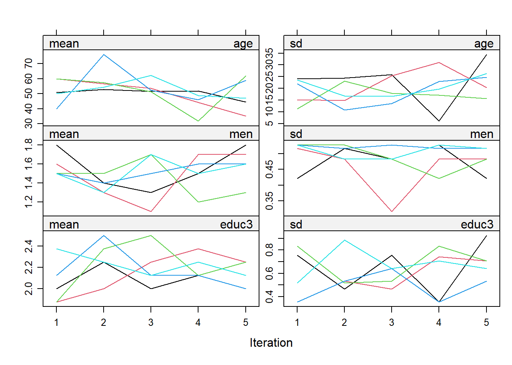
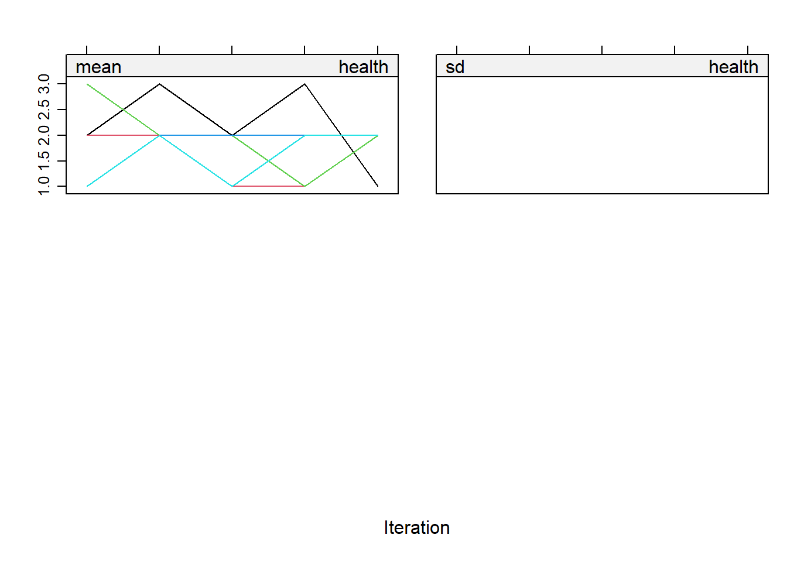

Appendix A SNASS
Lauren Dirix
1 Tutorial SNASS book
1.1 A1 through A6 - Setting up
rm(list = ls())
#install.packages("installr")
require(installr)## Loading required package: installr##
## Welcome to installr version 0.23.4
##
## More information is available on the installr project website:
## https://github.com/talgalili/installr/
##
## Contact: <tal.galili@gmail.com>
## Suggestions and bug-reports can be submitted at: https://github.com/talgalili/installr/issues
##
## To suppress this message use:
## suppressPackageStartupMessages(library(installr))#install.packages("foreign")
require(foreign)## Loading required package: foreignrequire(tidyverse)## Loading required package: tidyverse## ── Attaching core tidyverse packages ──────────────────────────────────────────── tidyverse 2.0.0 ──
## ✔ dplyr 1.2.1 ✔ readr 2.2.0
## ✔ forcats 1.0.1 ✔ stringr 1.6.0
## ✔ ggplot2 4.0.3 ✔ tibble 3.3.1
## ✔ lubridate 1.9.5 ✔ tidyr 1.3.2
## ✔ purrr 1.2.2
## ── Conflicts ────────────────────────────────────────────────────────────── tidyverse_conflicts() ──
## ✖ dplyr::filter() masks stats::filter()
## ✖ dplyr::lag() masks stats::lag()
## ℹ Use the conflicted package (<http://conflicted.r-lib.org/>) to force all conflicts to become errors#updateR()Loading data sets
cv08 <- foreign::read.spss("Cultural_Changes_2008.sav", use.value.labels = T, to.data.frame = T)## re-encoding from CP1252cv10 <- foreign::read.spss("Cultural_Changes_2010.sav", use.value.labels = T, to.data.frame = T)## re-encoding from CP1252cv08_nolab <- foreign::read.spss("Cultural_Changes_2008.sav", use.value.labels = F, to.data.frame = T)## re-encoding from CP1252cv10_nolab <- foreign::read.spss("Cultural_Changes_2010.sav", use.value.labels = F, to.data.frame = T)## re-encoding from CP1252cv08_haven <- haven::read_spss("Cultural_Changes_2008.sav")
cv10_haven <- haven::read_spss("Cultural_Changes_2010.sav")Inspect the data
str(cv08$lftop)## Factor w/ 81 levels "< één jaar","één jaar",..: 40 28 4 18 46 38 51 23 48 30 ...str(cv08_haven$lftop)## dbl+lbl [1:1963] 51, 39, 16, 29, 57, 49, 62, 34, 59, 41, 25, 43, 74, 17, 22, 32, 51, 66, 64, 2...
## @ label : chr "Leeftijd OP op datum interview"
## @ format.spss : chr "F10.0"
## @ display_width: int 12
## @ labels : Named num [1:5] 0 1 2 99 125
## ..- attr(*, "names")= chr [1:5] "< één jaar" "één jaar" "twee jaar" "Onbekend" ...attributes(cv08$lftop)## $levels
## [1] "< één jaar" "één jaar" "125 jaar" "16" "17" "18" "19"
## [8] "twee jaar" "20" "21" "22" "23" "24" "25"
## [15] "26" "27" "28" "29" "30" "31" "32"
## [22] "33" "34" "35" "36" "37" "38" "39"
## [29] "40" "41" "42" "43" "44" "45" "46"
## [36] "47" "48" "49" "50" "51" "52" "53"
## [43] "54" "55" "56" "57" "58" "59" "60"
## [50] "61" "62" "63" "64" "65" "66" "67"
## [57] "68" "69" "70" "71" "72" "73" "74"
## [64] "75" "76" "77" "78" "79" "80" "81"
## [71] "82" "83" "84" "85" "86" "87" "88"
## [78] "89" "90" "91" "Onbekend"
##
## $class
## [1] "factor"attributes(cv08_nolab$lftop)## $value.labels
## 125 jaar Onbekend twee jaar één jaar < één jaar
## "125" "99" "2" "1" "0"attributes(cv08_haven$lftop)## $label
## [1] "Leeftijd OP op datum interview"
##
## $format.spss
## [1] "F10.0"
##
## $display_width
## [1] 12
##
## $class
## [1] "haven_labelled" "vctrs_vctr" "double"
##
## $labels
## < één jaar één jaar twee jaar Onbekend 125 jaar
## 0 1 2 99 125names(cv08_haven)## [1] "we_id" "veilignr" "lft1" "geslacht" "allochtn" "lft01" "lftop" "gewicht"
## [9] "var006n" "v040" "var723" "var723a" "v202n" "var1061a" "var1061b" "var1062a"
## [17] "var1062b" "int137n" "int138n" "int139n" "int140n" "int141n" "v401" "var1343"
## [25] "var648" "var149" "var058" "var059" "var064" "var365" "var065" "var092"
## [33] "var096" "int054" "int055" "int056" "int057" "int058" "int059" "int059a"
## [41] "var571" "var572" "var573" "var574" "var576" "var153" "var154" "var155"
## [49] "var156" "var157" "var157a" "var154a" "var164" "var165" "var166" "var179"
## [57] "var180" "var184" "var185" "var198a" "var198" "var201a" "var201b" "var204"
## [65] "int257" "var211" "var223" "var1320" "var1321" "var1322" "var1323" "var1324"
## [73] "var1325" "var1326" "var1327" "var1328" "var229" "int218" "int219" "int221"
## [81] "int222" "int223" "int710" "int711" "int712" "int713" "int714" "int715"
## [89] "int716" "var433" "var439" "var1329" "var1330" "var445" "var446" "var447"
## [97] "var451" "var452" "var1316" "var1317" "var1331" "vw065" "var491" "var040"
## [105] "var1304" "var274" "var275" "var1196" "var1197" "var461" "var273" "var1262"
## [113] "var239" "var318" "var319" "var320" "var1209" "var1210" "var599" "var600"
## [121] "var408" "var409" "var10401" "var10402" "var10403" "var10404" "var10405" "var10406"
## [129] "var10407" "var10408" "var10409" "var10410" "var10411" "var10412" "var10413" "var10414"
## [137] "var10415" "var10416" "var1046a" "var1046b" "var1046c" "var1046d" "var1046e" "var1046f"
## [145] "var1046g" "var1046h" "var1046i" "var1046j" "var1046k" "var1046l" "var1046m" "var1046n"
## [153] "var1046o" "var1046p" "var687" "var688" "var689" "var953" "var1265" "var351"
## [161] "var402" "var595" "var972b" "var972d" "var972e" "var972f" "var972h" "var972i"
## [169] "var972k" "var1039b" "var1039c" "var1039d" "var1039e" "var1039f" "var1039g" "var1039h"
## [177] "var1039i" "var1039j" "var1039l" "var1039m" "var1145a" "var1145b" "var1145c" "var1145d"
## [185] "var1145e" "var1145f" "var1145g" "var1145h" "var1145i" "var1145j" "var1145k" "var1145l"
## [193] "var1145m" "var1145n" "var1145o" "var1145p" "var1146" "var1163" "var1335" "var1336"
## [201] "var1337" "var347" "var544" "var757bm" "var1318" "var1332" "var1333" "var1334"
## [209] "var763" "var766" "var767" "var1319" "var844" "var846" "var847" "var594"
## [217] "var1017" "var357" "var1307" "var1338" "var1339" "var1340" "var1341" "var1342"
## [225] "var516" "var683b" "var728b" "var729b" "var546" "var758" "var759" "var1031"
## [233] "var1103" "var1104" "var1106" "var1315a" "var1310" "var1311" "var1312" "var1313"
## [241] "var1314" "var900k" "var900l" "var548" "var5504" "var462b" "soorthhn" "plaatsin"
## [249] "lft2" "lft3" "lft4" "lft5" "lft6" "lft7" "lft8" "lft9"
## [257] "lft10" "geslac_1" "geslac_2" "geslac_3" "geslac_4" "geslac_5" "geslac_6" "geslac_7"
## [265] "geslac_8" "geslac_9" "lftcatjo" "soortbew" "soi98dop" "isco_op" "gemgrjj" "landd"
## [273] "stede" "generat" "typehh" "plaatshh" "plhh17" "wperiode"summary(cv08_haven)## we_id veilignr lft1 geslacht allochtn
## Min. :36775330 Min. :811000004 Min. : 0.00 Length :1963 Min. :0.0000
## 1st Qu.:37604540 1st Qu.:812003955 1st Qu.:33.00 N.unique : 3 1st Qu.:0.0000
## Median :38724230 Median :902002867 Median :46.00 N.blank : 0 Median :0.0000
## Mean :38830177 Mean :875088135 Mean :46.56 Min.nchar: 1 Mean :0.1793
## 3rd Qu.:40598965 3rd Qu.:904000134 3rd Qu.:60.00 Max.nchar: 1 3rd Qu.:0.0000
## Max. :41199300 Max. :905010166 Max. :99.00 Max. :9.0000
##
## lft01 lftop gewicht var006n v040 var723
## Min. :15.00 Min. :16.00 Min. : 955.1 Min. :-3.000 Min. :1.000 Min. :-5.00
## 1st Qu.:32.00 1st Qu.:33.00 1st Qu.: 5137.2 1st Qu.: 2.000 1st Qu.:1.000 1st Qu.:-5.00
## Median :46.00 Median :46.00 Median : 6473.4 Median : 5.000 Median :1.000 Median :20.00
## Mean :46.37 Mean :46.78 Mean : 6676.3 Mean : 3.999 Mean :1.352 Mean :18.69
## 3rd Qu.:60.00 3rd Qu.:61.00 3rd Qu.: 7981.1 3rd Qu.: 6.000 3rd Qu.:2.000 3rd Qu.:38.00
## Max. :99.00 Max. :99.00 Max. :20501.2 Max. : 8.000 Max. :2.000 Max. :90.00
##
## var723a v202n var1061a var1061b var1062a
## Min. :-5.000 Min. :-3.000 Min. :1.000 Min. : -5.000 Min. :1.000
## 1st Qu.:-5.000 1st Qu.: 1.000 1st Qu.:1.000 1st Qu.: -5.000 1st Qu.:2.000
## Median :-5.000 Median : 1.000 Median :2.000 Median : -5.000 Median :2.000
## Mean :-4.978 Mean : 2.695 Mean :1.721 Mean : -2.074 Mean :1.773
## 3rd Qu.:-5.000 3rd Qu.: 5.000 3rd Qu.:2.000 3rd Qu.: 1.000 3rd Qu.:2.000
## Max. : 4.000 Max. :10.000 Max. :2.000 Max. :168.000 Max. :2.000
##
## var1062b int137n int138n int139n int140n
## Min. : -5.000 Min. :-5.0000 Min. :-5.000 Min. :-5.0000 Min. :-5.000
## 1st Qu.: -5.000 1st Qu.: 1.0000 1st Qu.: 2.000 1st Qu.: 1.0000 1st Qu.: 1.000
## Median : -5.000 Median : 2.0000 Median : 3.000 Median : 1.0000 Median : 2.000
## Mean : -2.531 Mean : 0.5797 Mean : 2.232 Mean : 0.9103 Mean : 1.911
## 3rd Qu.: -5.000 3rd Qu.: 3.0000 3rd Qu.: 3.000 3rd Qu.: 3.0000 3rd Qu.: 3.000
## Max. :168.000 Max. : 3.0000 Max. : 3.000 Max. : 3.0000 Max. : 3.000
##
## int141n v401 var1343 var648 var149 var058
## Min. :-5.000 Min. :1.000 Min. :-3.00 Min. :1.00 Min. :-3.000 Min. :-3.000
## 1st Qu.: 1.000 1st Qu.:1.000 1st Qu.: 3.00 1st Qu.:2.00 1st Qu.: 1.000 1st Qu.: 1.000
## Median : 1.000 Median :2.000 Median : 3.00 Median :3.00 Median : 1.000 Median : 1.000
## Mean : 1.887 Mean :1.993 Mean : 2.86 Mean :2.58 Mean : 1.442 Mean : 1.149
## 3rd Qu.: 3.000 3rd Qu.:2.000 3rd Qu.: 3.00 3rd Qu.:3.00 3rd Qu.: 2.000 3rd Qu.: 1.000
## Max. : 3.000 Max. :5.000 Max. : 3.00 Max. :5.00 Max. : 3.000 Max. : 2.000
##
## var059 var064 var365 var065 var092
## Min. :-3.000 Min. :-3.000 Min. :-3.0000 Min. :-3.000 Min. :-3.000
## 1st Qu.: 1.000 1st Qu.: 1.000 1st Qu.: 1.0000 1st Qu.: 1.000 1st Qu.: 3.000
## Median : 1.000 Median : 1.000 Median : 1.0000 Median : 1.000 Median : 4.000
## Mean : 1.083 Mean : 1.149 Mean : 0.9409 Mean : 1.148 Mean : 3.295
## 3rd Qu.: 1.000 3rd Qu.: 2.000 3rd Qu.: 2.0000 3rd Qu.: 2.000 3rd Qu.: 4.000
## Max. : 2.000 Max. : 2.000 Max. : 2.0000 Max. : 2.000 Max. : 4.000
##
## var096 int054 int055 int056 int057
## Min. :-3.000 Min. :-3.000 Min. :-3.00 Min. :-3.000 Min. :-3.000
## 1st Qu.: 1.000 1st Qu.: 2.000 1st Qu.: 2.00 1st Qu.: 2.000 1st Qu.: 2.000
## Median : 2.000 Median : 2.000 Median : 3.00 Median : 2.000 Median : 2.000
## Mean : 2.008 Mean : 1.948 Mean : 2.43 Mean : 1.888 Mean : 1.954
## 3rd Qu.: 3.000 3rd Qu.: 3.000 3rd Qu.: 3.00 3rd Qu.: 3.000 3rd Qu.: 3.000
## Max. : 5.000 Max. : 4.000 Max. : 4.00 Max. : 4.000 Max. : 4.000
##
## int058 int059 int059a var571 var572
## Min. :-3.000 Min. :-3.000 Min. :-3.000 Min. :-3.000 Min. :-5.000
## 1st Qu.: 2.000 1st Qu.: 2.000 1st Qu.: 2.000 1st Qu.: 2.000 1st Qu.:-5.000
## Median : 2.000 Median : 2.000 Median : 2.000 Median : 2.000 Median : 1.000
## Mean : 2.065 Mean : 2.141 Mean : 1.851 Mean : 2.326 Mean :-0.864
## 3rd Qu.: 3.000 3rd Qu.: 3.000 3rd Qu.: 3.000 3rd Qu.: 3.000 3rd Qu.: 2.000
## Max. : 4.000 Max. : 4.000 Max. : 4.000 Max. : 3.000 Max. : 3.000
##
## var573 var574 var576 var153 var154
## Min. :-3.000 Min. :-5.000 Min. :-3.000 Min. :-3.000 Min. :-3.000
## 1st Qu.: 1.000 1st Qu.:-5.000 1st Qu.: 2.000 1st Qu.: 1.000 1st Qu.: 2.000
## Median : 2.000 Median :-5.000 Median : 3.000 Median : 1.000 Median : 2.000
## Mean : 1.615 Mean :-2.002 Mean : 2.985 Mean : 1.319 Mean : 1.889
## 3rd Qu.: 2.000 3rd Qu.: 2.000 3rd Qu.: 4.000 3rd Qu.: 2.000 3rd Qu.: 3.000
## Max. : 3.000 Max. : 3.000 Max. : 5.000 Max. : 3.000 Max. : 3.000
##
## var155 var156 var157 var157a var154a
## Min. :-3.000 Min. :-3.000 Min. :-3.000 Min. :-3.000 Min. :-3.00
## 1st Qu.: 2.000 1st Qu.: 2.000 1st Qu.:-3.000 1st Qu.: 2.000 1st Qu.: 2.00
## Median : 2.000 Median : 2.000 Median : 2.000 Median : 2.000 Median : 2.00
## Mean : 1.339 Mean : 1.415 Mean : 0.566 Mean : 1.506 Mean : 1.56
## 3rd Qu.: 3.000 3rd Qu.: 3.000 3rd Qu.: 3.000 3rd Qu.: 3.000 3rd Qu.: 2.00
## Max. : 3.000 Max. : 3.000 Max. : 3.000 Max. : 3.000 Max. : 3.00
##
## var164 var165 var166 var179 var180
## Min. :-3.000 Min. :-3.000 Min. :-3.000 Min. :-3.000 Min. :-3.000
## 1st Qu.: 1.000 1st Qu.: 3.000 1st Qu.: 3.000 1st Qu.: 1.000 1st Qu.: 1.000
## Median : 1.000 Median : 4.000 Median : 3.000 Median : 1.000 Median : 1.000
## Mean : 1.271 Mean : 3.752 Mean : 3.148 Mean : 1.061 Mean : 1.207
## 3rd Qu.: 2.000 3rd Qu.: 5.000 3rd Qu.: 4.000 3rd Qu.: 1.000 3rd Qu.: 1.000
## Max. : 3.000 Max. : 5.000 Max. : 5.000 Max. : 2.000 Max. : 2.000
##
## var184 var185 var198a var198 var201a
## Min. :-3.000 Min. :-3.000 Min. :1.000 Min. :-5.0000 Min. :-3.000
## 1st Qu.: 1.000 1st Qu.: 1.000 1st Qu.:1.000 1st Qu.:-5.0000 1st Qu.: 1.000
## Median : 1.000 Median : 1.000 Median :1.000 Median : 1.0000 Median : 2.000
## Mean : 1.233 Mean : 1.232 Mean :1.314 Mean :-0.2165 Mean : 1.661
## 3rd Qu.: 2.000 3rd Qu.: 2.000 3rd Qu.:2.000 3rd Qu.: 2.0000 3rd Qu.: 2.000
## Max. : 2.000 Max. : 2.000 Max. :2.000 Max. : 7.0000 Max. : 2.000
##
## var201b var204 int257 var211 var223
## Min. :-5.000 Min. :-3.000 Min. :-3.000 Min. :-3.000 Min. :-3.000
## 1st Qu.:-5.000 1st Qu.: 4.000 1st Qu.: 3.000 1st Qu.: 1.000 1st Qu.: 1.000
## Median :-5.000 Median : 5.000 Median : 3.000 Median : 3.000 Median : 1.000
## Mean :-2.512 Mean : 4.118 Mean : 3.881 Mean : 2.235 Mean : 1.258
## 3rd Qu.: 1.000 3rd Qu.: 5.000 3rd Qu.: 5.000 3rd Qu.: 3.000 3rd Qu.: 1.000
## Max. : 6.000 Max. : 5.000 Max. : 7.000 Max. : 3.000 Max. : 3.000
##
## var1320 var1321 var1322 var1323 var1324 var1325
## Min. :-3.000 Min. :-3.00 Min. :-3.00 Min. :-3.000 Min. :-3.000 Min. :-3.00
## 1st Qu.: 1.000 1st Qu.: 2.00 1st Qu.: 2.00 1st Qu.: 3.000 1st Qu.: 3.000 1st Qu.: 3.00
## Median : 2.000 Median : 2.00 Median : 2.00 Median : 3.000 Median : 3.000 Median : 3.00
## Mean : 1.658 Mean : 2.61 Mean : 2.13 Mean : 2.669 Mean : 2.821 Mean : 2.79
## 3rd Qu.: 2.000 3rd Qu.: 4.00 3rd Qu.: 3.00 3rd Qu.: 3.000 3rd Qu.: 3.000 3rd Qu.: 3.00
## Max. : 5.000 Max. : 5.00 Max. : 3.00 Max. : 3.000 Max. : 3.000 Max. : 3.00
##
## var1326 var1327 var1328 var229 int218
## Min. :-3.000 Min. :-3.000 Min. :-3.000 Min. :-3.000 Min. :-3.000
## 1st Qu.: 3.000 1st Qu.: 3.000 1st Qu.: 3.000 1st Qu.: 3.000 1st Qu.: 3.000
## Median : 3.000 Median : 3.000 Median : 3.000 Median : 3.000 Median : 3.000
## Mean : 2.924 Mean : 2.683 Mean : 2.909 Mean : 3.319 Mean : 2.967
## 3rd Qu.: 3.000 3rd Qu.: 3.000 3rd Qu.: 3.000 3rd Qu.: 3.000 3rd Qu.: 3.000
## Max. : 3.000 Max. : 3.000 Max. : 3.000 Max. : 8.000 Max. : 5.000
##
## int219 int221 int222 int223 int710
## Min. :-3.000 Min. :-3.000 Min. :-3.000 Min. :-3.000 Min. :-3.000
## 1st Qu.: 2.000 1st Qu.: 3.000 1st Qu.: 2.000 1st Qu.: 2.000 1st Qu.: 2.000
## Median : 3.000 Median : 3.000 Median : 3.000 Median : 3.000 Median : 3.000
## Mean : 2.574 Mean : 3.034 Mean : 2.685 Mean : 2.501 Mean : 2.608
## 3rd Qu.: 3.000 3rd Qu.: 4.000 3rd Qu.: 3.000 3rd Qu.: 3.000 3rd Qu.: 3.000
## Max. : 5.000 Max. : 5.000 Max. : 5.000 Max. : 5.000 Max. : 5.000
##
## int711 int712 int713 int714 int715
## Min. :-3.000 Min. :-3.00 Min. :-3.000 Min. :-3.000 Min. :-3.000
## 1st Qu.: 3.000 1st Qu.: 2.00 1st Qu.: 3.000 1st Qu.: 3.000 1st Qu.: 2.000
## Median : 3.000 Median : 3.00 Median : 3.000 Median : 3.000 Median : 3.000
## Mean : 2.827 Mean : 2.76 Mean : 2.737 Mean : 2.829 Mean : 2.575
## 3rd Qu.: 4.000 3rd Qu.: 3.00 3rd Qu.: 3.000 3rd Qu.: 4.000 3rd Qu.: 4.000
## Max. : 5.000 Max. : 5.00 Max. : 5.000 Max. : 5.000 Max. : 5.000
##
## int716 var433 var439 var1329 var1330
## Min. :-3.000 Min. :-3.000 Min. :-3.000 Min. :-3.000 Min. :-3.000
## 1st Qu.: 2.000 1st Qu.: 2.000 1st Qu.: 1.000 1st Qu.: 1.000 1st Qu.: 2.000
## Median : 3.000 Median : 4.000 Median : 2.000 Median : 2.000 Median : 3.000
## Mean : 2.322 Mean : 3.331 Mean : 2.407 Mean : 2.114 Mean : 3.163
## 3rd Qu.: 3.000 3rd Qu.: 5.000 3rd Qu.: 4.000 3rd Qu.: 3.000 3rd Qu.: 5.000
## Max. : 5.000 Max. : 5.000 Max. : 5.000 Max. : 5.000 Max. : 5.000
##
## var445 var446 var447 var451 var452
## Min. :-3.000 Min. :-3.000 Min. :-3.000 Min. :-3.000 Min. :-3.000
## 1st Qu.: 3.000 1st Qu.: 2.000 1st Qu.: 2.000 1st Qu.: 3.000 1st Qu.: 2.000
## Median : 4.000 Median : 3.000 Median : 3.000 Median : 4.000 Median : 3.000
## Mean : 3.746 Mean : 2.706 Mean : 3.003 Mean : 3.779 Mean : 2.788
## 3rd Qu.: 5.000 3rd Qu.: 4.000 3rd Qu.: 4.000 3rd Qu.: 5.000 3rd Qu.: 4.000
## Max. : 5.000 Max. : 5.000 Max. : 5.000 Max. : 5.000 Max. : 5.000
##
## var1316 var1317 var1331 vw065 var491
## Min. :-3.000 Min. :-3.000 Min. :-3.000 Min. :-3.000 Min. :-3.000
## 1st Qu.: 2.000 1st Qu.: 2.000 1st Qu.: 1.000 1st Qu.: 1.000 1st Qu.: 2.000
## Median : 3.000 Median : 3.000 Median : 2.000 Median : 1.000 Median : 2.000
## Mean : 2.952 Mean : 2.862 Mean : 1.735 Mean : 1.185 Mean : 2.665
## 3rd Qu.: 4.000 3rd Qu.: 4.000 3rd Qu.: 2.000 3rd Qu.: 2.000 3rd Qu.: 3.000
## Max. : 5.000 Max. : 5.000 Max. : 4.000 Max. : 2.000 Max. : 5.000
##
## var040 var1304 var274 var275 var1196
## Min. :-3.000 Min. :-3.000 Min. :-3.000 Min. :-5.000 Min. :-3.000
## 1st Qu.: 1.000 1st Qu.: 2.000 1st Qu.: 1.000 1st Qu.: 1.000 1st Qu.: 1.000
## Median : 1.000 Median : 2.000 Median : 1.000 Median : 3.000 Median : 1.000
## Mean : 1.803 Mean : 1.964 Mean : 1.322 Mean : 4.462 Mean : 1.489
## 3rd Qu.: 2.000 3rd Qu.: 2.000 3rd Qu.: 1.000 3rd Qu.: 8.000 3rd Qu.: 2.000
## Max. : 4.000 Max. : 4.000 Max. : 4.000 Max. :14.000 Max. : 3.000
##
## var1197 var461 var273 var1262 var239
## Min. :-3.0000 Min. :-3.00 Min. :-3.000 Min. :-3.000 Min. :-3.000
## 1st Qu.: 1.0000 1st Qu.: 2.00 1st Qu.: 2.000 1st Qu.: 2.000 1st Qu.: 1.000
## Median : 1.0000 Median : 3.00 Median : 2.000 Median : 3.000 Median : 2.000
## Mean : 0.8197 Mean : 2.33 Mean : 2.065 Mean : 2.863 Mean : 1.614
## 3rd Qu.: 1.0000 3rd Qu.: 4.00 3rd Qu.: 3.000 3rd Qu.: 4.000 3rd Qu.: 2.000
## Max. : 2.0000 Max. : 5.00 Max. : 5.000 Max. : 5.000 Max. : 2.000
##
## var318 var319 var320 var1209 var1210
## Min. :-3.000 Min. :-3.000 Min. :-3.000 Min. :-3.000 Min. :-3.000
## 1st Qu.: 1.000 1st Qu.: 1.000 1st Qu.: 1.000 1st Qu.: 1.000 1st Qu.: 1.000
## Median : 1.000 Median : 2.000 Median : 1.000 Median : 2.000 Median : 2.000
## Mean : 1.435 Mean : 1.485 Mean : 1.194 Mean : 1.952 Mean : 1.785
## 3rd Qu.: 2.000 3rd Qu.: 2.000 3rd Qu.: 2.000 3rd Qu.: 3.000 3rd Qu.: 2.000
## Max. : 2.000 Max. : 2.000 Max. : 2.000 Max. : 4.000 Max. : 4.000
##
## var599 var600 var408 var409 var10401
## Min. :-3.000 Min. :-3.000 Min. :-3.000 Min. :-3.000 Length :1963
## 1st Qu.: 2.000 1st Qu.: 2.000 1st Qu.: 2.000 1st Qu.: 1.000 N.unique : 18
## Median : 2.000 Median : 2.000 Median : 2.000 Median : 1.000 N.blank : 0
## Mean : 1.908 Mean : 1.759 Mean : 2.231 Mean : 1.485 Min.nchar: 1
## 3rd Qu.: 2.000 3rd Qu.: 2.000 3rd Qu.: 3.000 3rd Qu.: 2.000 Max.nchar: 1
## Max. : 2.000 Max. : 2.000 Max. : 3.000 Max. : 3.000
##
## var10402 var10403 var10404 var10405 var10406
## Length :1963 Length :1963 Length :1963 Length :1963 Length :1963
## N.unique : 18 N.unique : 18 N.unique : 18 N.unique : 18 N.unique : 18
## N.blank : 0 N.blank : 0 N.blank : 0 N.blank : 0 N.blank : 0
## Min.nchar: 1 Min.nchar: 1 Min.nchar: 1 Min.nchar: 1 Min.nchar: 1
## Max.nchar: 1 Max.nchar: 1 Max.nchar: 1 Max.nchar: 1 Max.nchar: 1
##
##
## var10407 var10408 var10409 var10410 var10411
## Length :1963 Length :1963 Length :1963 Length :1963 Length :1963
## N.unique : 18 N.unique : 18 N.unique : 18 N.unique : 18 N.unique : 18
## N.blank : 0 N.blank : 0 N.blank : 0 N.blank : 0 N.blank : 0
## Min.nchar: 1 Min.nchar: 1 Min.nchar: 1 Min.nchar: 1 Min.nchar: 1
## Max.nchar: 1 Max.nchar: 1 Max.nchar: 1 Max.nchar: 1 Max.nchar: 1
##
##
## var10412 var10413 var10414 var10415 var10416
## Length :1963 Length :1963 Length :1963 Length :1963 Length :1963
## N.unique : 18 N.unique : 18 N.unique : 18 N.unique : 18 N.unique : 18
## N.blank : 0 N.blank : 0 N.blank : 0 N.blank : 0 N.blank : 0
## Min.nchar: 1 Min.nchar: 1 Min.nchar: 1 Min.nchar: 1 Min.nchar: 1
## Max.nchar: 1 Max.nchar: 1 Max.nchar: 1 Max.nchar: 1 Max.nchar: 1
##
##
## var1046a var1046b var1046c var1046d var1046e
## Min. :-4.000 Min. :-4.000 Min. :-4.000 Min. :-4.000 Min. :-4.000
## 1st Qu.: 3.000 1st Qu.: 7.000 1st Qu.: 5.000 1st Qu.: 2.000 1st Qu.: 5.000
## Median : 6.000 Median :10.000 Median : 9.000 Median : 5.000 Median : 9.000
## Mean : 6.175 Mean : 9.328 Mean : 8.621 Mean : 5.761 Mean : 8.733
## 3rd Qu.: 9.000 3rd Qu.:13.000 3rd Qu.:12.000 3rd Qu.: 9.000 3rd Qu.:13.000
## Max. :16.000 Max. :16.000 Max. :16.000 Max. :16.000 Max. :16.000
##
## var1046f var1046g var1046h var1046i var1046j
## Min. :-4.00 Min. :-4.000 Min. :-4.00 Min. :-4.000 Min. :-4.000
## 1st Qu.:12.00 1st Qu.: 7.000 1st Qu.:10.00 1st Qu.: 2.000 1st Qu.: 3.000
## Median :15.00 Median :10.000 Median :13.00 Median : 5.000 Median : 5.000
## Mean :13.17 Mean : 9.357 Mean :11.66 Mean : 5.423 Mean : 5.732
## 3rd Qu.:16.00 3rd Qu.:13.000 3rd Qu.:15.00 3rd Qu.: 8.000 3rd Qu.: 8.000
## Max. :16.00 Max. :16.000 Max. :16.00 Max. :16.000 Max. :16.000
##
## var1046k var1046l var1046m var1046n var1046o
## Min. :-4.000 Min. :-4.000 Min. :-4.000 Min. :-4.000 Min. :-4.000
## 1st Qu.: 3.000 1st Qu.: 6.000 1st Qu.: 4.000 1st Qu.: 5.000 1st Qu.: 3.000
## Median : 6.000 Median :10.000 Median : 6.000 Median : 8.000 Median : 5.000
## Mean : 6.542 Mean : 9.194 Mean : 6.552 Mean : 8.047 Mean : 5.587
## 3rd Qu.:10.000 3rd Qu.:13.000 3rd Qu.: 9.000 3rd Qu.:12.000 3rd Qu.: 8.000
## Max. :16.000 Max. :16.000 Max. :16.000 Max. :16.000 Max. :16.000
##
## var1046p var687 var688 var689 var953
## Min. :-4.00 Min. :-3.000 Min. :-5.0000 Min. :-3.000 Min. :-3.000
## 1st Qu.: 8.00 1st Qu.: 1.000 1st Qu.:-5.0000 1st Qu.: 1.000 1st Qu.: 3.000
## Median :13.00 Median : 1.000 Median : 1.0000 Median : 1.000 Median : 3.000
## Mean :11.25 Mean : 1.279 Mean :-0.1854 Mean : 1.175 Mean : 2.593
## 3rd Qu.:15.00 3rd Qu.: 2.000 3rd Qu.: 2.0000 3rd Qu.: 1.000 3rd Qu.: 3.000
## Max. :16.00 Max. : 3.000 Max. : 3.0000 Max. : 2.000 Max. : 3.000
##
## var1265 var351 var402 var595 var972b
## Min. :-3.000 Min. :-3.000 Min. :-3.000 Min. :-3.000 Min. :-2.000
## 1st Qu.: 1.000 1st Qu.: 2.000 1st Qu.: 2.000 1st Qu.: 2.000 1st Qu.: 2.000
## Median : 2.000 Median : 4.000 Median : 3.000 Median : 2.000 Median : 3.000
## Mean : 1.386 Mean : 3.356 Mean : 2.891 Mean : 2.221 Mean : 3.118
## 3rd Qu.: 3.000 3rd Qu.: 5.000 3rd Qu.: 4.000 3rd Qu.: 3.000 3rd Qu.: 4.000
## Max. : 3.000 Max. : 5.000 Max. : 5.000 Max. : 5.000 Max. : 5.000
##
## var972d var972e var972f var972h var972i
## Min. :-3.000 Min. :-3.000 Min. :-3.000 Min. :-3.000 Min. :-3.000
## 1st Qu.: 2.000 1st Qu.: 2.000 1st Qu.: 2.000 1st Qu.: 3.000 1st Qu.: 2.000
## Median : 2.000 Median : 2.000 Median : 3.000 Median : 3.000 Median : 2.000
## Mean : 2.343 Mean : 2.087 Mean : 2.853 Mean : 3.324 Mean : 2.109
## 3rd Qu.: 3.000 3rd Qu.: 2.000 3rd Qu.: 3.000 3rd Qu.: 4.000 3rd Qu.: 3.000
## Max. : 5.000 Max. : 5.000 Max. : 5.000 Max. : 5.000 Max. : 5.000
##
## var972k var1039b var1039c var1039d var1039e
## Min. :-3.000 Min. :-3.000 Min. :-3.00 Min. :-3.000 Min. :-3.000
## 1st Qu.: 2.000 1st Qu.: 3.000 1st Qu.: 3.00 1st Qu.: 3.000 1st Qu.: 3.000
## Median : 2.000 Median : 4.000 Median : 3.00 Median : 3.000 Median : 3.000
## Mean : 2.523 Mean : 3.474 Mean : 3.42 Mean : 2.771 Mean : 2.997
## 3rd Qu.: 3.000 3rd Qu.: 4.000 3rd Qu.: 4.00 3rd Qu.: 3.000 3rd Qu.: 3.000
## Max. : 5.000 Max. : 5.000 Max. : 5.00 Max. : 5.000 Max. : 5.000
##
## var1039f var1039g var1039h var1039i var1039j
## Min. :-3.000 Min. :-3.000 Min. :-3.00 Min. :-3.000 Min. :-3.000
## 1st Qu.: 3.000 1st Qu.: 3.000 1st Qu.: 3.00 1st Qu.: 3.000 1st Qu.: 3.000
## Median : 4.000 Median : 3.000 Median : 4.00 Median : 4.000 Median : 3.000
## Mean : 3.828 Mean : 3.483 Mean : 3.24 Mean : 3.731 Mean : 3.266
## 3rd Qu.: 4.000 3rd Qu.: 4.000 3rd Qu.: 4.00 3rd Qu.: 4.000 3rd Qu.: 4.000
## Max. : 5.000 Max. : 5.000 Max. : 5.00 Max. : 5.000 Max. : 5.000
##
## var1039l var1039m var1145a var1145b var1145c
## Min. :-3.000 Min. :-3.000 Min. :-3.000 Min. :-3.00 Min. :-3.000
## 1st Qu.: 3.000 1st Qu.: 3.000 1st Qu.: 5.000 1st Qu.: 5.00 1st Qu.: 6.000
## Median : 3.000 Median : 3.000 Median : 6.000 Median : 6.00 Median : 6.000
## Mean : 3.171 Mean : 3.127 Mean : 5.439 Mean : 5.22 Mean : 5.628
## 3rd Qu.: 4.000 3rd Qu.: 4.000 3rd Qu.: 7.000 3rd Qu.: 7.00 3rd Qu.: 7.000
## Max. : 5.000 Max. : 5.000 Max. :10.000 Max. :10.00 Max. :10.000
##
## var1145d var1145e var1145f var1145g var1145h
## Min. :-3.000 Min. :-3.000 Min. :-3.000 Min. :-3.000 Min. :-3.000
## 1st Qu.: 5.000 1st Qu.: 5.000 1st Qu.: 5.000 1st Qu.: 5.000 1st Qu.: 5.000
## Median : 6.000 Median : 6.000 Median : 6.000 Median : 6.000 Median : 6.000
## Mean : 5.595 Mean : 5.592 Mean : 5.938 Mean : 5.836 Mean : 5.697
## 3rd Qu.: 7.000 3rd Qu.: 7.000 3rd Qu.: 7.000 3rd Qu.: 7.000 3rd Qu.: 7.000
## Max. :10.000 Max. : 9.000 Max. :10.000 Max. :10.000 Max. :10.000
##
## var1145i var1145j var1145k var1145l var1145m
## Min. :-3.00 Min. :-3.000 Min. :-3.000 Min. :-3.000 Min. :-3.000
## 1st Qu.: 5.00 1st Qu.: 5.000 1st Qu.: 5.000 1st Qu.: 5.000 1st Qu.: 5.000
## Median : 6.00 Median : 6.000 Median : 6.000 Median : 6.000 Median : 6.000
## Mean : 5.77 Mean : 5.428 Mean : 5.004 Mean : 5.345 Mean : 5.311
## 3rd Qu.: 7.00 3rd Qu.: 7.000 3rd Qu.: 7.000 3rd Qu.: 7.000 3rd Qu.: 7.000
## Max. :10.00 Max. :10.000 Max. :10.000 Max. :10.000 Max. :10.000
##
## var1145n var1145o var1145p var1146 var1163
## Min. :-3.000 Min. :-3.000 Min. :-3.000 Min. :-3.000 Min. :-3.000
## 1st Qu.: 5.000 1st Qu.: 5.000 1st Qu.: 5.000 1st Qu.: 2.000 1st Qu.: 2.000
## Median : 6.000 Median : 6.000 Median : 6.000 Median : 2.000 Median : 2.000
## Mean : 5.145 Mean : 5.347 Mean : 4.607 Mean : 2.174 Mean : 2.094
## 3rd Qu.: 7.000 3rd Qu.: 7.000 3rd Qu.: 7.000 3rd Qu.: 2.000 3rd Qu.: 3.000
## Max. :10.000 Max. :10.000 Max. :10.000 Max. : 4.000 Max. : 4.000
##
## var1335 var1336 var1337 var347 var544
## Min. :-3.000 Min. :-3.000 Min. :-3.000 Min. :-3.000 Min. :-3.000
## 1st Qu.: 3.000 1st Qu.: 2.000 1st Qu.: 3.000 1st Qu.: 2.000 1st Qu.: 1.000
## Median : 4.000 Median : 2.000 Median : 4.000 Median : 2.000 Median : 2.000
## Mean : 3.482 Mean : 2.065 Mean : 3.598 Mean : 2.427 Mean : 1.584
## 3rd Qu.: 4.000 3rd Qu.: 2.000 3rd Qu.: 4.000 3rd Qu.: 3.000 3rd Qu.: 2.000
## Max. : 5.000 Max. : 5.000 Max. : 5.000 Max. : 5.000 Max. : 3.000
##
## var757bm var1318 var1332 var1333 var1334
## Min. :-3.000 Min. :-3.000 Min. :-3.00 Min. :-3.000 Min. :-3.000
## 1st Qu.: 1.000 1st Qu.: 1.000 1st Qu.: 1.00 1st Qu.: 3.000 1st Qu.: 2.000
## Median : 1.000 Median : 1.000 Median : 1.00 Median : 3.000 Median : 3.000
## Mean : 1.164 Mean : 1.857 Mean : 1.34 Mean : 3.221 Mean : 2.646
## 3rd Qu.: 2.000 3rd Qu.: 3.000 3rd Qu.: 1.00 3rd Qu.: 4.000 3rd Qu.: 3.000
## Max. : 2.000 Max. : 3.000 Max. : 4.00 Max. : 4.000 Max. : 4.000
##
## var763 var766 var767 var1319 var844
## Length :1963 Length :1963 Length :1963 Min. :-3.000 Min. :-3.000
## N.unique :1758 N.unique :1744 N.unique :1675 1st Qu.: 3.000 1st Qu.: 1.000
## N.blank : 0 N.blank : 0 N.blank : 0 Median : 4.000 Median : 2.000
## Min.nchar: 1 Min.nchar: 1 Min.nchar: 1 Mean : 3.875 Mean : 1.914
## Max.nchar: 255 Max.nchar: 255 Max.nchar: 235 3rd Qu.: 5.000 3rd Qu.: 2.000
## Max. : 6.000 Max. : 5.000
##
## var846 var847 var594 var1017 var357
## Min. :-3.000 Min. :-3.000 Min. :-3.000 Min. :-3.000 Min. :-3.000
## 1st Qu.: 1.000 1st Qu.: 1.000 1st Qu.: 3.000 1st Qu.: 2.000 1st Qu.: 2.000
## Median : 2.000 Median : 2.000 Median : 4.000 Median : 3.000 Median : 3.000
## Mean : 2.141 Mean : 1.986 Mean : 3.312 Mean : 2.702 Mean : 2.841
## 3rd Qu.: 3.000 3rd Qu.: 3.000 3rd Qu.: 4.000 3rd Qu.: 4.000 3rd Qu.: 4.000
## Max. : 5.000 Max. : 5.000 Max. : 5.000 Max. : 5.000 Max. : 5.000
##
## var1307 var1338 var1339 var1340 var1341
## Min. :-3.000 Min. :-3.000 Min. :-3.000 Min. :-3.000 Min. :-3.000
## 1st Qu.: 1.000 1st Qu.: 1.000 1st Qu.: 1.000 1st Qu.: 2.000 1st Qu.: 2.000
## Median : 1.000 Median : 1.000 Median : 1.000 Median : 2.000 Median : 2.000
## Mean : 1.085 Mean : 1.226 Mean : 1.133 Mean : 2.112 Mean : 1.756
## 3rd Qu.: 2.000 3rd Qu.: 3.000 3rd Qu.: 2.000 3rd Qu.: 3.000 3rd Qu.: 2.000
## Max. : 3.000 Max. : 3.000 Max. : 3.000 Max. : 3.000 Max. : 3.000
##
## var1342 var516 var683b var728b var729b
## Min. :-3.000 Min. :-3.000 Min. :-3.000 Min. :-3.000 Min. :-3.00
## 1st Qu.: 1.000 1st Qu.: 2.000 1st Qu.: 2.000 1st Qu.: 3.000 1st Qu.: 3.00
## Median : 1.000 Median : 2.000 Median : 3.000 Median : 3.000 Median : 3.00
## Mean : 1.198 Mean : 1.853 Mean : 2.606 Mean : 2.587 Mean : 2.71
## 3rd Qu.: 2.000 3rd Qu.: 3.000 3rd Qu.: 3.000 3rd Qu.: 3.000 3rd Qu.: 3.00
## Max. : 3.000 Max. : 3.000 Max. : 3.000 Max. : 3.000 Max. : 3.00
##
## var546 var758 var759 var1031 var1103
## Min. :-3.000 Min. :-3.000 Min. :-3.000 Min. :-3.000 Min. :-3.000
## 1st Qu.: 1.000 1st Qu.: 1.000 1st Qu.: 1.000 1st Qu.: 1.000 1st Qu.: 1.000
## Median : 1.000 Median : 1.000 Median : 1.000 Median : 2.000 Median : 2.000
## Mean : 1.618 Mean : 1.355 Mean : 1.177 Mean : 1.625 Mean : 1.709
## 3rd Qu.: 3.000 3rd Qu.: 1.000 3rd Qu.: 1.000 3rd Qu.: 2.000 3rd Qu.: 2.000
## Max. : 4.000 Max. : 4.000 Max. : 4.000 Max. : 3.000 Max. : 4.000
##
## var1104 var1106 var1315a var1310 var1311
## Min. :-3.000 Min. :-3.000 Min. :-3.000 Min. :-3.00 Min. :-3.000
## 1st Qu.: 2.000 1st Qu.: 2.000 1st Qu.: 1.000 1st Qu.: 2.00 1st Qu.: 2.000
## Median : 3.000 Median : 3.000 Median : 3.000 Median : 3.00 Median : 3.000
## Mean : 2.527 Mean : 2.517 Mean : 2.208 Mean : 2.38 Mean : 2.271
## 3rd Qu.: 3.000 3rd Qu.: 3.000 3rd Qu.: 3.000 3rd Qu.: 3.00 3rd Qu.: 3.000
## Max. : 4.000 Max. : 4.000 Max. : 4.000 Max. : 4.00 Max. : 4.000
##
## var1312 var1313 var1314 var900k var900l
## Min. :-3.000 Min. :-3.000 Min. :-3.00 Min. :-3.000 Min. :-5.000
## 1st Qu.: 2.000 1st Qu.: 1.000 1st Qu.: 1.00 1st Qu.: 2.000 1st Qu.: 2.000
## Median : 3.000 Median : 2.000 Median : 2.00 Median : 3.000 Median : 2.000
## Mean : 2.285 Mean : 1.561 Mean : 1.42 Mean : 2.971 Mean : 2.209
## 3rd Qu.: 3.000 3rd Qu.: 2.000 3rd Qu.: 3.00 3rd Qu.: 4.000 3rd Qu.: 3.000
## Max. : 4.000 Max. : 4.000 Max. : 4.00 Max. : 5.000 Max. : 3.000
##
## var548 var5504 var462b soorthhn plaatsin lft2
## Min. :-5.000 Min. :-5.00 Min. :-10105 Min. :1.000 Min. : 1.00 Min. : 1.00
## 1st Qu.: 1.000 1st Qu.:-5.00 1st Qu.: 29826 1st Qu.:3.000 1st Qu.: 2.00 1st Qu.:20.00
## Median : 2.000 Median :-5.00 Median : 48446 Median :4.000 Median : 4.00 Median :43.00
## Mean : 1.698 Mean :-2.97 Mean : 54056 Mean :3.604 Mean : 3.94 Mean :40.02
## 3rd Qu.: 2.000 3rd Qu.: 1.00 3rd Qu.: 71490 3rd Qu.:5.000 3rd Qu.: 6.00 3rd Qu.:58.00
## Max. : 2.000 Max. : 2.00 Max. :317482 Max. :8.000 Max. :10.00 Max. :96.00
## NAs :14 NAs :6 NAs :6 NAs :392
## lft3 lft4 lft5 lft6 lft7 lft8
## Min. : 1.00 Min. : 1.00 Min. : 1.00 Min. : 1.00 Min. : 11 Min. :14.00
## 1st Qu.:12.00 1st Qu.:11.00 1st Qu.:10.00 1st Qu.: 9.00 1st Qu.: 43 1st Qu.:14.75
## Median :22.50 Median :20.00 Median :17.00 Median :16.00 Median :2007 Median :20.00
## Mean :28.03 Mean :27.03 Mean :23.59 Mean :26.12 Mean :1346 Mean :26.25
## 3rd Qu.:46.00 3rd Qu.:45.00 3rd Qu.:43.00 3rd Qu.:43.50 3rd Qu.:2007 3rd Qu.:31.50
## Max. :90.00 Max. :82.00 Max. :77.00 Max. :99.00 Max. :2007 Max. :51.00
## NAs :1075 NAs :1390 NAs :1787 NAs :1912 NAs :1951 NAs :1959
## lft9 lft10 geslac_1 geslac_2 geslac_3 geslac_4
## Min. :15.00 Min. :12 Length :1963 Length :1963 Length :1963 Length :1963
## 1st Qu.:19.50 1st Qu.:12 N.unique : 3 N.unique : 3 N.unique : 3 N.unique : 3
## Median :24.00 Median :12 N.blank : 392 N.blank :1075 N.blank :1390 N.blank :1787
## Mean :30.33 Mean :12 Min.nchar: 0 Min.nchar: 0 Min.nchar: 0 Min.nchar: 0
## 3rd Qu.:38.00 3rd Qu.:12 Max.nchar: 1 Max.nchar: 1 Max.nchar: 1 Max.nchar: 1
## Max. :52.00 Max. :12
## NAs :1960 NAs :1962
## geslac_5 geslac_6 geslac_7 geslac_8 geslac_9
## Length :1963 Length :1963 Length :1963 Length :1963 Length :1963
## N.unique : 3 N.unique : 3 N.unique : 2 N.unique : 3 N.unique : 2
## N.blank :1912 N.blank :1951 N.blank :1959 N.blank :1960 N.blank :1962
## Min.nchar: 0 Min.nchar: 0 Min.nchar: 0 Min.nchar: 0 Min.nchar: 0
## Max.nchar: 1 Max.nchar: 1 Max.nchar: 1 Max.nchar: 1 Max.nchar: 1
##
##
## lftcatjo soortbew soi98dop isco_op gemgrjj landd
## Length :1963 Length :1963 Min. :200123 Length :1963 Min. :1.00 Min. :1.000
## N.unique : 5 N.unique : 3 1st Qu.:338110 N.unique : 210 1st Qu.:4.00 1st Qu.:2.000
## N.blank :1845 N.blank : 6 Median :430168 N.blank : 280 Median :4.00 Median :3.000
## Min.nchar: 0 Min.nchar: 0 Mean :444655 Min.nchar: 0 Mean :4.84 Mean :2.805
## Max.nchar: 5 Max.nchar: 2 3rd Qu.:520799 Max.nchar: 4 3rd Qu.:6.00 3rd Qu.:3.000
## Max. :999900 Max. :8.00 Max. :4.000
## NAs :379
## stede generat typehh plaatshh plhh17 wperiode
## Min. :1.000 Min. :1.000 Min. :1.000 Min. : 1.000 Min. :1 Min. :200811
## 1st Qu.:2.000 1st Qu.:4.000 1st Qu.:3.000 1st Qu.: 2.000 1st Qu.:1 1st Qu.:200812
## Median :3.000 Median :4.000 Median :4.000 Median : 4.000 Median :1 Median :200902
## Mean :2.933 Mean :3.656 Mean :3.602 Mean : 3.938 Mean :1 Mean :200875
## 3rd Qu.:4.000 3rd Qu.:4.000 3rd Qu.:5.000 3rd Qu.: 6.000 3rd Qu.:1 3rd Qu.:200904
## Max. :5.000 Max. :4.000 Max. :8.000 Max. :10.000 Max. :1 Max. :200905
## NAs :6 NAs :6head(cv08_haven)## # A tibble: 6 × 278
## we_id veilignr lft1 geslacht allochtn lft01 lftop gewicht var006n v040 var723 var723a
## <dbl+lbl> <dbl> <dbl+> <chr+lb> <dbl+lb> <dbl> <dbl> <dbl> <dbl+l> <dbl+l> <dbl+lb> <dbl+lb>
## 1 36775330 811002474 51 M [Man] 0 [geen… 50 51 8423. 6 [hbo] 2 [Nee] -5 [N.v… -5 [N.v…
## 2 36775340 811002539 39 V [Vrou… 0 [geen… 38 39 6244. 8 [wo] 1 [Ja] 45 -5 [N.v…
## 3 36775420 811002551 16 V [Vrou… 1 [allo… 15 16 13434. 3 [mav… 2 [Nee] -5 [N.v… -5 [N.v…
## 4 36775440 811002563 30 M [Man] 0 [geen… 29 29 8997 8 [wo] 1 [Ja] 20 -5 [N.v…
## 5 36775450 811002743 57 M [Man] 0 [geen… 56 57 8423. 6 [hbo] 2 [Nee] -5 [N.v… -5 [N.v…
## 6 36775460 811002607 49 V [Vrou… 1 [allo… 48 49 9537. 2 [vmb… 2 [Nee] -5 [N.v… -5 [N.v…
## # ℹ 266 more variables: v202n <dbl+lbl>, var1061a <dbl+lbl>, var1061b <dbl+lbl>,
## # var1062a <dbl+lbl>, var1062b <dbl+lbl>, int137n <dbl+lbl>, int138n <dbl+lbl>,
## # int139n <dbl+lbl>, int140n <dbl+lbl>, int141n <dbl+lbl>, v401 <dbl+lbl>, var1343 <dbl+lbl>,
## # var648 <dbl+lbl>, var149 <dbl+lbl>, var058 <dbl+lbl>, var059 <dbl+lbl>, var064 <dbl+lbl>,
## # var365 <dbl+lbl>, var065 <dbl+lbl>, var092 <dbl+lbl>, var096 <dbl+lbl>, int054 <dbl+lbl>,
## # int055 <dbl+lbl>, int056 <dbl+lbl>, int057 <dbl+lbl>, int058 <dbl+lbl>, int059 <dbl+lbl>,
## # int059a <dbl+lbl>, var571 <dbl+lbl>, var572 <dbl+lbl>, var573 <dbl+lbl>, var574 <dbl+lbl>, …fix(cv08)
View(cv08_haven)1.2 A7 - Assign missing values
1.2.1 In base
str(cv08_haven$lftop)## dbl+lbl [1:1963] 51, 39, 16, 29, 57, 49, 62, 34, 59, 41, 25, 43, 74, 17, 22, 32, 51, 66, 64, 2...
## @ label : chr "Leeftijd OP op datum interview"
## @ format.spss : chr "F10.0"
## @ display_width: int 12
## @ labels : Named num [1:5] 0 1 2 99 125
## ..- attr(*, "names")= chr [1:5] "< één jaar" "één jaar" "twee jaar" "Onbekend" ...summary(cv08_haven$lftop)## Min. 1st Qu. Median Mean 3rd Qu. Max.
## 16.00 33.00 46.00 46.78 61.00 99.00attr(cv08_haven$lftop, "labels")## < één jaar één jaar twee jaar Onbekend 125 jaar
## 0 1 2 99 125table(cv08_haven$lftop, useNA = "always")##
## 16 17 18 19 20 21 22 23 24 25 26 27 28 29 30 31 32 33 34 35
## 40 37 39 30 30 25 25 38 26 22 18 23 29 30 22 28 23 23 24 38
## 36 37 38 39 40 41 42 43 44 45 46 47 48 49 50 51 52 53 54 55
## 35 37 34 48 45 34 36 39 43 38 41 32 41 45 29 29 43 32 25 27
## 56 57 58 59 60 61 62 63 64 65 66 67 68 69 70 71 72 73 74 75
## 27 30 44 34 33 36 40 29 27 30 19 24 24 24 23 21 13 15 26 10
## 76 77 78 79 80 81 82 83 84 85 86 87 88 89 90 91 99 <NA>
## 14 17 13 13 10 7 10 10 7 6 3 8 2 3 1 3 4 0cv08$lftop_new <- cv08$lftop
cv08$lftop_new[cv08$lftop_new == "Onbekend"] <- NA
table(cv08$lftop_new, useNA = "always")##
## < één jaar één jaar 125 jaar 16 17 18 19 twee jaar 20
## 0 0 0 40 37 39 30 0 30
## 21 22 23 24 25 26 27 28 29
## 25 25 38 26 22 18 23 29 30
## 30 31 32 33 34 35 36 37 38
## 22 28 23 23 24 38 35 37 34
## 39 40 41 42 43 44 45 46 47
## 48 45 34 36 39 43 38 41 32
## 48 49 50 51 52 53 54 55 56
## 41 45 29 29 43 32 25 27 27
## 57 58 59 60 61 62 63 64 65
## 30 44 34 33 36 40 29 27 30
## 66 67 68 69 70 71 72 73 74
## 19 24 24 24 23 21 13 15 26
## 75 76 77 78 79 80 81 82 83
## 10 14 17 13 13 10 7 10 10
## 84 85 86 87 88 89 90 91 Onbekend
## 7 6 3 8 2 3 1 3 0
## <NA>
## 4levels(cv08$lftop_new)## [1] "< één jaar" "één jaar" "125 jaar" "16" "17" "18" "19"
## [8] "twee jaar" "20" "21" "22" "23" "24" "25"
## [15] "26" "27" "28" "29" "30" "31" "32"
## [22] "33" "34" "35" "36" "37" "38" "39"
## [29] "40" "41" "42" "43" "44" "45" "46"
## [36] "47" "48" "49" "50" "51" "52" "53"
## [43] "54" "55" "56" "57" "58" "59" "60"
## [50] "61" "62" "63" "64" "65" "66" "67"
## [57] "68" "69" "70" "71" "72" "73" "74"
## [64] "75" "76" "77" "78" "79" "80" "81"
## [71] "82" "83" "84" "85" "86" "87" "88"
## [78] "89" "90" "91" "Onbekend"cv08$agen <- as.numeric(as.character(cv08$lftop_new))
table(cv08$agen, useNA = "always")##
## 16 17 18 19 20 21 22 23 24 25 26 27 28 29 30 31 32 33 34 35
## 40 37 39 30 30 25 25 38 26 22 18 23 29 30 22 28 23 23 24 38
## 36 37 38 39 40 41 42 43 44 45 46 47 48 49 50 51 52 53 54 55
## 35 37 34 48 45 34 36 39 43 38 41 32 41 45 29 29 43 32 25 27
## 56 57 58 59 60 61 62 63 64 65 66 67 68 69 70 71 72 73 74 75
## 27 30 44 34 33 36 40 29 27 30 19 24 24 24 23 21 13 15 26 10
## 76 77 78 79 80 81 82 83 84 85 86 87 88 89 90 91 <NA>
## 14 17 13 13 10 7 10 10 7 6 3 8 2 3 1 3 4str(cv08$agen)## num [1:1963] 51 39 16 29 57 49 62 34 59 41 ...1.2.2 In tidy
#cv08_haven <- mutate(cv08_haven, lftop_new = lftop)
#cv08_haven$lftop_new <- na_if(cv08_haven$lftop_new, 99)
#OR (more quickly)
cv08_haven <- mutate(cv08_haven, lftop_new = na_if(lftop, 99))
table(cv08_haven$lftop_new, useNA = "always")##
## 16 17 18 19 20 21 22 23 24 25 26 27 28 29 30 31 32 33 34 35
## 40 37 39 30 30 25 25 38 26 22 18 23 29 30 22 28 23 23 24 38
## 36 37 38 39 40 41 42 43 44 45 46 47 48 49 50 51 52 53 54 55
## 35 37 34 48 45 34 36 39 43 38 41 32 41 45 29 29 43 32 25 27
## 56 57 58 59 60 61 62 63 64 65 66 67 68 69 70 71 72 73 74 75
## 27 30 44 34 33 36 40 29 27 30 19 24 24 24 23 21 13 15 26 10
## 76 77 78 79 80 81 82 83 84 85 86 87 88 89 90 91 <NA>
## 14 17 13 13 10 7 10 10 7 6 3 8 2 3 1 3 41.3 A8 - Recoding variables
1.3.1 In base
levels(cv08$var006n)## [1] "onbekend" "OP < 12 jr of volgt actueel bas.ondw."
## [3] "basisonderwijs" "vmbo"
## [5] "mavo" "havo/vwo"
## [7] "mbo" "hbo"
## [9] "wo" "wo_duplicated_8"
## [11] "Onbekend"table(cv08$var006n, useNA = "always")##
## onbekend OP < 12 jr of volgt actueel bas.ondw.
## 5 0
## basisonderwijs vmbo
## 380 287
## mavo havo/vwo
## 137 106
## mbo hbo
## 543 339
## wo wo_duplicated_8
## 0 166
## Onbekend <NA>
## 0 0cv08$educn <- as.numeric(cv08$var006n)
table(cv08$educn, useNA = "always")##
## 1 3 4 5 6 7 8 10 <NA>
## 5 380 287 137 106 543 339 166 0cv08$educ3 <- NA
cv08$educ3[cv08$educn == 2 | cv08$educn ==3] <- 1
cv08$educ3[cv08$educn > 3 & cv08$educn < 8] <- 2
cv08$educ3[cv08$educn > 7 & cv08$educn < 11] <- 3
table(cv08$educ3, useNA = "always")##
## 1 2 3 <NA>
## 380 1073 505 5prop.table(table(cv08$educ3, useNA = "always"))##
## 1 2 3 <NA>
## 0.193581253 0.546612328 0.257259297 0.002547122cv08$educ3 <- as.factor(cv08$educ3)
table(cv08$educ3, useNA = "always")##
## 1 2 3 <NA>
## 380 1073 505 5levels(cv08$educ3) <- c( "primary", "secondary", "tertiary")
table(cv08$educ3, useNA = "always")##
## primary secondary tertiary <NA>
## 380 1073 505 51.3.2 In tidy
#install.packages("labelled")
require(labelled)## Loading required package: labelledstr(cv08_haven$var006n)## dbl+lbl [1:1963] 6, 8, 3, 8, 6, 2, 2, 5, 5, 1, 1, 3, 2, 1, 1, 5, 6, 3, 1, 5, 6, 2, 5, 6, 1, 3,...
## @ label : chr "Voltooid opleidingsniveau (uitgebreid) OP, 12-14 jarigen niet standaard op bas.ondw."
## @ format.spss : chr "F10.0"
## @ display_width: int 12
## @ labels : Named num [1:11] -3 -1 1 2 3 4 5 6 7 8 ...
## ..- attr(*, "names")= chr [1:11] "onbekend" "OP < 12 jr of volgt actueel bas.ondw." "basisonderwijs" "vmbo" ...attr(cv08_haven$var006n, "labels")## onbekend OP < 12 jr of volgt actueel bas.ondw.
## -3e+00 -1e+00
## basisonderwijs vmbo
## 1e+00 2e+00
## mavo havo/vwo
## 3e+00 4e+00
## mbo hbo
## 5e+00 6e+00
## wo wo
## 7e+00 8e+00
## Onbekend
## 1e+10table(cv08_haven$var006n, useNA = "always")##
## -3 1 2 3 4 5 6 8 <NA>
## 5 380 287 137 106 543 339 166 0cv08_haven <- mutate(cv08_haven, educ3 = recode(var006n, '-3' = -9, '-1' = 1, '1' = 1, '2' = 2, '3' = 2, '4' = 2, '5' = 2, '6' = 3, '7' = 3, '8' = 3, '10' = -9), .keep_value_labels = FALSE)
cv08_haven <- mutate(cv08_haven, educ3 = na_if(educ3, -9))
cv08_haven <- mutate(cv08_haven, educ3 = factor(educ3, levels = c(1, 2, 3), labels = c("primary", "secondary", "tertiary")))
table(cv08_haven$educ3, useNA = "always")##
## primary secondary tertiary <NA>
## 380 1073 505 5Using piping
cv08_haven <- cv08_haven %>%
mutate(cv08_haven, educ3 = recode(var006n, '-3' = -9, '-1' = 1, '1' = 1, '2' = 2, '3' = 2, '4' = 2, '5' = 2, '6'
= 3, '7' = 3, '8' = 3, '10' = -9), .keep_value_labels = FALSE) %>%
mutate(educ3 = na_if(educ3, -9)) %>%
mutate(educ3 = factor(educ3, levels = c(1, 2, 3), labels = c("primary", "secondary", "tertiary")))1.4 A9 - Means and counting
1.4.1 In base
summary(cv08$int055)## Geen opgave N.v.t. Weet niet
## 0 0 85
## Weigert Zeer groot Groot
## 0 57 551
## Niet zo groot Helemaal geen tegenstelling
## 1213 57summary(cv08$int056)## Geen opgave N.v.t. Weet niet
## 0 0 118
## Weigert Zeer groot Groot
## 0 258 987
## Niet zo groot Helemaal geen tegenstelling
## 571 29summary(cv08$int057)## Geen opgave N.v.t. Weet niet
## 0 0 145
## Weigert Zeer groot Groot
## 0 213 803
## Niet zo groot Helemaal geen tegenstelling
## 756 46cv08$int055n <- as.numeric(cv08$int055)
table(cv08$int055n, useNA = "always")##
## 3 5 6 7 8 <NA>
## 85 57 551 1213 57 0cv08$int056n <- as.numeric(cv08$int056)
table(cv08$int056n, useNA = "always")##
## 3 5 6 7 8 <NA>
## 118 258 987 571 29 0cv08$int057n <- as.numeric(cv08$int057)
table(cv08$int057n, useNA = "always")##
## 3 5 6 7 8 <NA>
## 145 213 803 756 46 0cv08$int055n[cv08$int055n < 5] <- NA
cv08$int055n <- cv08$int055n - 4
cv08$int056n[cv08$int056n < 5] <- NA
cv08$int056n <- cv08$int056n - 4
cv08$int057n[cv08$int057n < 5] <- NA
cv08$int057n <- cv08$int057n - 4
#means per respondent
testmeans <- rowMeans(cbind(cv08$int055n, cv08$int056n, cv08$int057n), na.rm = T)
head(testmeans)## [1] 2.333333 2.666667 2.666667 2.333333 1.500000 1.333333nmis <- rowSums(is.na(cbind(cv08$int055n, cv08$ubt056n, cv08$int057n)))
testmeans <- ifelse(nmis <2, testmeans, NA)
cv08$int_mean <- testmeans1.4.2 In tidy
table(cv08_haven$int055, useNA = "always")##
## -3 1 2 3 4 <NA>
## 85 57 551 1213 57 0table(cv08_haven$int056, useNA = "always")##
## -3 1 2 3 4 <NA>
## 118 258 987 571 29 0table(cv08_haven$int057, useNA = "always")##
## -3 1 2 3 4 <NA>
## 145 213 803 756 46 0cv08_haven <- cv08_haven %>%
mutate(int055n = recode(int055, '-6' = -9, '-5' = -9, '-3' = -9, '-2' = -9, '1' = 4, '2' = 3, '3'
= 2, '4' = 1), .keep_value_labels = FALSE) %>%
mutate(int055n = na_if(int055n, -9)) %>%
mutate(int055n = labelled(int055n, c('Helemaal geen tegenstelling' = 1,'Niet zo groot' = 2, 'groot'
= 3, 'Zeer groot' = 4)))
cv08_haven <- cv08_haven %>%
mutate(int056n = recode(int056, '-6' = -9, '-5' = -9, '-3' = -9, '-2' = -9, '1' = 4, '2' = 3, '3'
= 2, '4' = 1), .keep_value_labels = FALSE) %>%
mutate(int056n = na_if(int056n, -9)) %>%
mutate(int056n = labelled(int056n, c('Helemaal geen tegenstelling' = 1,'Niet zo groot' = 2, 'groot'
= 3, 'Zeer groot' = 4)))
cv08_haven <- cv08_haven %>%
mutate(int057n = recode(int057, '-6' = -9, '-5' = -9, '-3' = -9, '-2' = -9, '1' = 4, '2' = 3, '3'
= 2, '4' = 1), .keep_value_labels = FALSE) %>%
mutate(int057n = na_if(int057n, -9)) %>%
mutate(int057n = labelled(int057n, c('Helemaal geen tegenstelling' = 1,'Niet zo groot' = 2, 'groot'
= 3, 'Zeer groot' = 4)))
#mean regardless of how many missings
cv08_haven <- cv08_haven %>%
rowwise() %>%
mutate(int_mean = mean(c(int055n, int056n, int057n), na.rm = TRUE))
#mean with max 1 missing, otherwise NA
cv08_haven <- cv08_haven %>%
mutate(int_mean_temp = rowMeans(cbind(int055n, int056n, int057n), na.rm = TRUE), nmis =
rowSums(is.na(cbind(int055n, int056n, int057n))), int_mean = ifelse(nmis < 2, int_mean_temp,
NA)) %>%
dplyr:: select(-int_mean_temp, -nmis)1.5 A10 - Merging data files
1.5.1 In base
- Selecting the variables we want to keep
cv08_sel <- cv08[, c("we_id", "lftop", "geslacht", "var006n", "v401", "landd")]
cv10_sel <- cv10[, c("Sleutel", "var002", "var001", "Vltoplop", "V401", "Landd")]- Make variables consistent
names(cv08_sel) <- names(cv10_sel) <- c("id", "age", "sex", "educ", "health", "region")
summary(cv08_sel)## id age sex educ health
## 36775330: 1 39 : 48 Onbekend: 10 mbo :543 goed, :1060
## 36775340: 1 40 : 45 Man :996 basisonderwijs :380 zeer goed, : 504
## 36775420: 1 49 : 45 Vrouw :957 hbo :339 gaat wel, : 320
## 36775440: 1 58 : 44 vmbo :287 slecht, : 67
## 36775450: 1 44 : 43 wo_duplicated_8:166 of zeer slecht?: 12
## 36775460: 1 52 : 43 mavo :137 Geen opgave : 0
## (Other) :1957 (Other):1695 (Other) :111 (Other) : 0
## region
## Postcode (nog) onbekend: 0
## Noord-Nederland :220
## Oost-Nederland :416
## West-Nederland :853
## Zuid-Nederland :474
##
## summary(cv10_sel)## id age sex educ
## Min. :20131231 Min. :16.00 Man :1512 OP volgt actueel basisonderwijs: 0
## 1st Qu.:20131965 1st Qu.:34.00 Vrouw:1424 Lager onderwijs : 459
## Median :20132699 Median :48.00 Lbo : 430
## Mean :20132699 Mean :48.27 Mavo, vwo-3 : 234
## 3rd Qu.:20133432 3rd Qu.:63.00 Havo, vwo, mbo :1040
## Max. :20134166 Max. :96.00 HBO,universiteit : 770
## Onbekend : 3
## health region
## goed, :1592 Noord-Nederland: 306
## zeer goed, : 776 Oost-Nederland : 678
## gaat wel, : 466 West-Nederland :1263
## slecht, : 79 Zuid-Nederland : 689
## of zeer slecht?: 22
## Weigert : 1
## (Other) : 0#ID
cv08_sel$id <- as.numeric(as.character(cv08_sel$id))
cv10_sel$id <- as.numeric(as.character(cv10_sel$id))
#Age
cv08_sel$age <- as.numeric(as.character(cv08_sel$age))## Warning: NAs introduced by coercioncv10_sel$age <- as.numeric(as.character(cv10_sel$age))
#Sex
table(cv08_sel$sex, useNA = "always")##
## Onbekend Man Vrouw <NA>
## 10 996 957 0table(cv10_sel$sex, useNA = "always")##
## Man Vrouw <NA>
## 1512 1424 0cv08_sel$sexn <- as.numeric(cv08_sel$sex)
table(cv08_sel$sexn, useNA = "always")##
## 1 2 3 <NA>
## 10 996 957 0cv08_sel$men <- ifelse(cv08_sel$sexn == 2, 1, 0)
cv08_sel$men <- ifelse(cv08_sel$sexn == 1, NA, cv08_sel$men)
table(cv08_sel$men, useNA = "always")##
## 0 1 <NA>
## 957 996 10cv10_sel$sexn <- as.numeric(cv10_sel$sex)
table(cv10_sel$sexn, useNA = "always")##
## 1 2 <NA>
## 1512 1424 0cv10_sel$men <- ifelse(cv10_sel$sexn == 2, 1, 0)
table(cv10_sel$men, useNA = "always")##
## 0 1 <NA>
## 1512 1424 0#Education
levels(cv08_sel$educ)## [1] "onbekend" "OP < 12 jr of volgt actueel bas.ondw."
## [3] "basisonderwijs" "vmbo"
## [5] "mavo" "havo/vwo"
## [7] "mbo" "hbo"
## [9] "wo" "wo_duplicated_8"
## [11] "Onbekend"levels(cv10_sel$educ)## [1] "OP volgt actueel basisonderwijs" "Lager onderwijs"
## [3] "Lbo" "Mavo, vwo-3"
## [5] "Havo, vwo, mbo" "HBO,universiteit"
## [7] "Onbekend"table(cv08_sel$educ, useNA= "always")##
## onbekend OP < 12 jr of volgt actueel bas.ondw.
## 5 0
## basisonderwijs vmbo
## 380 287
## mavo havo/vwo
## 137 106
## mbo hbo
## 543 339
## wo wo_duplicated_8
## 0 166
## Onbekend <NA>
## 0 0table(cv10_sel$educ, useNA= "always")##
## OP volgt actueel basisonderwijs Lager onderwijs Lbo
## 0 459 430
## Mavo, vwo-3 Havo, vwo, mbo HBO,universiteit
## 234 1040 770
## Onbekend <NA>
## 3 0cv08_sel$educn <- as.numeric(cv08_sel$educ)
table(cv08_sel$educn)##
## 1 3 4 5 6 7 8 10
## 5 380 287 137 106 543 339 166cv08_sel$educ3 <- NA
cv08_sel$educ3[cv08_sel$educn == 2 | cv08_sel$educn == 3] <- 1
cv08_sel$educ3[cv08_sel$educn > 3 & cv08_sel$educn < 8] <- 2
cv08_sel$educ3[cv08_sel$educn > 7 & cv08_sel$educn < 11] <- 3
table(cv08_sel$educ3, useNA = "always")##
## 1 2 3 <NA>
## 380 1073 505 5cv10_sel$educn <- as.numeric(cv10_sel$educ)
table(cv10_sel$educn)##
## 2 3 4 5 6 7
## 459 430 234 1040 770 3cv10_sel$educ3 <- NA
cv10_sel$educ3[cv10_sel$educn < 3] <- 1
cv10_sel$educ3[cv10_sel$educn > 2 & cv10_sel$educn < 6] <- 2
cv10_sel$educ3[cv10_sel$educn == 6] <- 3
table(cv10_sel$educ3, useNA = "always")##
## 1 2 3 <NA>
## 459 1704 770 3- Merge
cv08_sel$wave <- 2008
cv10_sel$wave <- 2010
cv08_sel$id2 <- rank(cv08_sel$id)
cv10_sel$id2 <- rank(cv10_sel$id)
#clean up data sets
cv08_sel <- cv08_sel[, c("id", "id2", "age", "men", "educ3", "health", "region", "wave")]
cv10_sel <- cv10_sel[, c("id", "id2", "age", "men", "educ3", "health", "region", "wave")]
summary(cv08_sel)## id id2 age men educ3
## Min. :36775330 Min. : 1.0 Min. :16.00 Min. :0.00 Min. :1.000
## 1st Qu.:37604540 1st Qu.: 491.5 1st Qu.:33.00 1st Qu.:0.00 1st Qu.:2.000
## Median :38724230 Median : 982.0 Median :46.00 Median :1.00 Median :2.000
## Mean :38830177 Mean : 982.0 Mean :46.67 Mean :0.51 Mean :2.064
## 3rd Qu.:40598965 3rd Qu.:1472.5 3rd Qu.:60.00 3rd Qu.:1.00 3rd Qu.:3.000
## Max. :41199300 Max. :1963.0 Max. :91.00 Max. :1.00 Max. :3.000
## NAs :4 NAs :10 NAs :5
## health region wave
## goed, :1060 Postcode (nog) onbekend: 0 Min. :2008
## zeer goed, : 504 Noord-Nederland :220 1st Qu.:2008
## gaat wel, : 320 Oost-Nederland :416 Median :2008
## slecht, : 67 West-Nederland :853 Mean :2008
## of zeer slecht?: 12 Zuid-Nederland :474 3rd Qu.:2008
## Geen opgave : 0 Max. :2008
## (Other) : 0summary(cv10_sel)## id id2 age men educ3
## Min. :20131231 Min. : 1.0 Min. :16.00 Min. :0.000 Min. :1.000
## 1st Qu.:20131965 1st Qu.: 734.8 1st Qu.:34.00 1st Qu.:0.000 1st Qu.:2.000
## Median :20132699 Median :1468.5 Median :48.00 Median :0.000 Median :2.000
## Mean :20132699 Mean :1468.5 Mean :48.27 Mean :0.485 Mean :2.106
## 3rd Qu.:20133432 3rd Qu.:2202.2 3rd Qu.:63.00 3rd Qu.:1.000 3rd Qu.:3.000
## Max. :20134166 Max. :2936.0 Max. :96.00 Max. :1.000 Max. :3.000
## NAs :3
## health region wave
## goed, :1592 Noord-Nederland: 306 Min. :2010
## zeer goed, : 776 Oost-Nederland : 678 1st Qu.:2010
## gaat wel, : 466 West-Nederland :1263 Median :2010
## slecht, : 79 Zuid-Nederland : 689 Mean :2010
## of zeer slecht?: 22 3rd Qu.:2010
## Weigert : 1 Max. :2010
## (Other) : 0#Long format
cv_tot <- rbind(cv08_sel, cv10_sel)
summary(cv_tot)## id id2 age men educ3
## Min. :20131231 Min. : 1 Min. :16.00 Min. :0.000 Min. :1.000
## 1st Qu.:20132456 1st Qu.: 613 1st Qu.:33.00 1st Qu.:0.000 1st Qu.:2.000
## Median :20133680 Median :1225 Median :47.00 Median :0.000 Median :2.000
## Mean :27624666 Mean :1274 Mean :47.63 Mean :0.495 Mean :2.089
## 3rd Qu.:37978375 3rd Qu.:1838 3rd Qu.:62.00 3rd Qu.:1.000 3rd Qu.:3.000
## Max. :41199300 Max. :2936 Max. :96.00 Max. :1.000 Max. :3.000
## NAs :4 NAs :10 NAs :8
## health region wave
## goed, :2652 Postcode (nog) onbekend: 0 Min. :2008
## zeer goed, :1280 Noord-Nederland : 526 1st Qu.:2008
## gaat wel, : 786 Oost-Nederland :1094 Median :2010
## slecht, : 146 West-Nederland :2116 Mean :2009
## of zeer slecht?: 34 Zuid-Nederland :1163 3rd Qu.:2010
## Weigert : 1 Max. :2010
## (Other) : 0#Wide format
cv_tot_panel <- merge(cv08_sel, cv10_sel, all = TRUE, by = "id2")
head(cv_tot_panel)## id2 id.x age.x men.x educ3.x health.x region.x wave.x id.y age.y men.y educ3.y
## 1 1 36775330 51 1 3 goed, West-Nederland 2008 20131231 20 0 2
## 2 2 36775340 39 0 3 goed, West-Nederland 2008 20131232 29 0 3
## 3 3 36775420 16 0 2 goed, West-Nederland 2008 20131233 30 1 2
## 4 4 36775440 29 1 3 goed, West-Nederland 2008 20131234 64 1 2
## 5 5 36775450 57 1 3 gaat wel, West-Nederland 2008 20131235 45 1 1
## 6 6 36775460 49 0 2 goed, West-Nederland 2008 20131236 80 0 2
## health.y region.y wave.y
## 1 goed, West-Nederland 2010
## 2 zeer goed, West-Nederland 2010
## 3 goed, West-Nederland 2010
## 4 goed, West-Nederland 2010
## 5 goed, West-Nederland 2010
## 6 goed, West-Nederland 20101.5.2 In tidy
cv08_sel <- cv08_haven %>%
dplyr:: select(c("we_id", "lftop", "geslacht", "var006n", "v401", "landd"))
cv10_sel <- cv10_haven %>%
dplyr:: select(c("Sleutel", "var002", "var001", "Vltoplop", "V401", "Landd"))
names(cv08_sel) <- names(cv10_sel) <- c("id", "age", "sex", "educ", "health", "region")
cv08_sel <- cv08_sel %>%
mutate(age = na_if(age, 99))
cv10_sel <- cv10_sel %>%
mutate(age = na_if(age, 99))
cv08_sel <- cv08_sel %>%
mutate(men = recode(sex, `9` = -9, M = 1, V = 0, .keep_value_labels = FALSE),
men = na_if(men, -9), men = labelled(men, c(man = 1, vrouw = 0)))
cv10_sel <- cv10_sel %>%
mutate(men = recode(sex, `2` = 0, .keep_value_labels = FALSE), men = labelled(men,
c(man = 1, vrouw = 0)))
cv08_sel <- cv08_sel %>%
mutate(educ3 = recode(educ, `-3` = -9, `-1` = 1, `1` = 1, `2` = 2, `3` = 2, `4` = 2, `5` = 2,
`6` = 3, `7` = 3, `8` = 3, `10` = -9, .keep_value_labels = FALSE), educ3 = na_if(educ3, -9),
educ3 = factor(educ3, levels = c(1, 2, 3), labels = c("primary", "secondary", "tertiary")))
cv10_sel <- cv10_sel %>%
mutate(educ3 = recode(educ, `-1` = 1, `1` = 1, `2` = 2, `3` = 2, `4` = 2, `5` = 3, `10` = -9,
.keep_value_labels = FALSE), educ3 = na_if(educ3, -9), educ3 = factor(educ3, levels = c(1, 2,
3), labels = c("primary", "secondary", "tertiary")))
cv08_sel$wave <- 2008
cv10_sel$wave <- 2010
cv08_sel$id2 <- rank(cv08_sel$id)
cv10_sel$id2 <- rank(cv10_sel$id)
cv08_sel <- cv08_sel %>%
dplyr::select(c("id", "id2", "age", "men", "educ3", "health", "region", "wave"))
cv10_sel <- cv10_sel %>%
dplyr::select(c("id", "id2", "age", "men", "educ3", "health", "region", "wave"))
#Merge long
cv_tot_tidy <- cv08_sel %>%
add_row(cv10_sel)
summary(cv_tot_tidy)## id id2 age men educ3
## Min. :20131231 Min. : 1 Min. :16.00 Min. :0.000 primary : 839
## 1st Qu.:20132456 1st Qu.: 613 1st Qu.:33.00 1st Qu.:0.000 secondary:2777
## Median :20133680 Median :1225 Median :47.00 Median :1.000 tertiary :1275
## Mean :27624666 Mean :1274 Mean :47.63 Mean :0.513 NAs : 8
## 3rd Qu.:37978375 3rd Qu.:1838 3rd Qu.:62.00 3rd Qu.:1.000
## Max. :41199300 Max. :2936 Max. :96.00 Max. :1.000
## NAs :4 NAs :10
## health region wave
## Min. :-2.000 Min. :1.000 Min. :2008
## 1st Qu.: 1.000 1st Qu.:2.000 1st Qu.:2008
## Median : 2.000 Median :3.000 Median :2010
## Mean : 1.979 Mean :2.799 Mean :2009
## 3rd Qu.: 2.000 3rd Qu.:3.000 3rd Qu.:2010
## Max. : 5.000 Max. :4.000 Max. :2010
## #Merge wide
cv_tot_panel_tidy <- full_join(cv08_sel, cv10_sel, by = "id2", suffix = c(".2008", ".2010"))1.6 A11 - Aggregate data
1.6.1 In base
age_region <- aggregate(cv_tot$age, by = list(cv_tot$region), FUN = mean)
head(age_region)## Group.1 x
## 1 Noord-Nederland 47.77567
## 2 Oost-Nederland 48.04113
## 3 West-Nederland NA
## 4 Zuid-Nederland NAage_region <- aggregate(cv_tot$age, by = list(cv_tot$region), FUN = mean, na.rm = TRUE)
head(age_region)## Group.1 x
## 1 Noord-Nederland 47.77567
## 2 Oost-Nederland 48.04113
## 3 West-Nederland 46.88416
## 4 Zuid-Nederland 48.52500names(age_region) <- c("region", "age_region")
age_region## region age_region
## 1 Noord-Nederland 47.77567
## 2 Oost-Nederland 48.04113
## 3 West-Nederland 46.88416
## 4 Zuid-Nederland 48.52500cv_total <- merge(cv_tot, age_region, by = "region", all.x = TRUE)1.6.2 In tidy
age_region <- group_by(cv_tot_tidy, region)
age_region <- mutate(age_region, mean = mean(age, na.rm = TRUE))
# Or shorter:
cv_total_tidy <- cv_tot_tidy %>%
group_by(region) %>%
mutate(age_region = mean(age, na.rm = TRUE)) %>%
ungroup()1.7 A12 - Missing values
1.7.1 In base
cv_total$health[cv_total$health == "Weigert"] <- NA
cv_total$healthn <- as.numeric(cv_total$health) - 4
table(cv_total$health, useNA = "always")##
## Geen opgave N.v.t. Weet niet Weigert zeer goed, goed,
## 0 0 0 0 1280 2652
## gaat wel, slecht, of zeer slecht? <NA>
## 786 146 34 1table(cv_total$healthn, useNA = "always")##
## 1 2 3 4 5 <NA>
## 1280 2652 786 146 34 1Listwise deletion
summary(cv_total)## region id id2 age men
## Postcode (nog) onbekend: 0 Min. :20131231 Min. : 1 Min. :16.00 Min. :0.000
## Noord-Nederland : 526 1st Qu.:20132456 1st Qu.: 613 1st Qu.:33.00 1st Qu.:0.000
## Oost-Nederland :1094 Median :20133680 Median :1225 Median :47.00 Median :0.000
## West-Nederland :2116 Mean :27624666 Mean :1274 Mean :47.63 Mean :0.495
## Zuid-Nederland :1163 3rd Qu.:37978375 3rd Qu.:1838 3rd Qu.:62.00 3rd Qu.:1.000
## Max. :41199300 Max. :2936 Max. :96.00 Max. :1.000
## NAs :4 NAs :10
## educ3 health wave age_region healthn
## Min. :1.000 goed, :2652 Min. :2008 Min. :46.88 Min. :1.00
## 1st Qu.:2.000 zeer goed, :1280 1st Qu.:2008 1st Qu.:46.88 1st Qu.:1.00
## Median :2.000 gaat wel, : 786 Median :2010 Median :47.78 Median :2.00
## Mean :2.089 slecht, : 146 Mean :2009 Mean :47.63 Mean :1.98
## 3rd Qu.:3.000 of zeer slecht?: 34 3rd Qu.:2010 3rd Qu.:48.04 3rd Qu.:2.00
## Max. :3.000 (Other) : 0 Max. :2010 Max. :48.52 Max. :5.00
## NAs :8 NAs : 1 NAs :1model2 <- lm(as.numeric(healthn) ~ men + age + as.factor(educ3) + as.factor(region), data = cv_total)
summary(model2)##
## Call:
## lm(formula = as.numeric(healthn) ~ men + age + as.factor(educ3) +
## as.factor(region), data = cv_total)
##
## Residuals:
## Min 1Q Median 3Q Max
## -1.6261 -0.6001 0.0094 0.3288 3.2415
##
## Coefficients:
## Estimate Std. Error t value Pr(>|t|)
## (Intercept) 1.6429046 0.0515620 31.863 < 2e-16 ***
## men -0.0162517 0.0211087 -0.770 0.441
## age 0.0115192 0.0005855 19.673 < 2e-16 ***
## as.factor(educ3)2 -0.1831872 0.0292989 -6.252 4.39e-10 ***
## as.factor(educ3)3 -0.3233545 0.0330525 -9.783 < 2e-16 ***
## as.factor(region)Oost-Nederland -0.0535499 0.0391492 -1.368 0.171
## as.factor(region)West-Nederland -0.0153441 0.0359807 -0.426 0.670
## as.factor(region)Zuid-Nederland 0.0157006 0.0387850 0.405 0.686
## ---
## Signif. codes: 0 '***' 0.001 '**' 0.01 '*' 0.05 '.' 0.1 ' ' 1
##
## Residual standard error: 0.7367 on 4868 degrees of freedom
## (23 observations deleted due to missingness)
## Multiple R-squared: 0.09925, Adjusted R-squared: 0.09795
## F-statistic: 76.63 on 7 and 4868 DF, p-value: < 2.2e-16Replacing missing values
# Categorical variables (add NA category)
cv_total$men2 <- ifelse(is.na(cv_total$men), 2, cv_total$men)
summary(cv_total$men2)## Min. 1st Qu. Median Mean 3rd Qu. Max.
## 0.0000 0.0000 0.0000 0.4981 1.0000 2.0000cv_total$educ3b <- ifelse(is.na(cv_total$educ3), 4, cv_total$educ3)
summary(cv_total$educ3b)## Min. 1st Qu. Median Mean 3rd Qu. Max.
## 1.000 2.000 2.000 2.092 3.000 4.000# Continuous variables (input the mean)
cv_total$age2 <- ifelse(is.na(cv_total$age), mean(cv_total$age, na.rm = TRUE), cv_total$age)
cv_total$age_mis <- ifelse(is.na(cv_total$age), 1, 0)
summary(cv_total$age2)## Min. 1st Qu. Median Mean 3rd Qu. Max.
## 16.00 33.50 47.00 47.63 62.00 96.00table(cv_total$age_mis)##
## 0 1
## 4895 4model3 <- lm(healthn ~ as.factor(men2) + age2 + age_mis + as.factor(educ3b) + as.factor(region), data = cv_total)
summary(model3)##
## Call:
## lm(formula = healthn ~ as.factor(men2) + age2 + age_mis + as.factor(educ3b) +
## as.factor(region), data = cv_total)
##
## Residuals:
## Min 1Q Median 3Q Max
## -1.6200 -0.6013 0.0103 0.3268 3.2422
##
## Coefficients:
## Estimate Std. Error t value Pr(>|t|)
## (Intercept) 1.6430251 0.0516038 31.839 < 2e-16 ***
## as.factor(men2)1 -0.0186500 0.0211416 -0.882 0.378
## as.factor(men2)2 -0.2534807 0.2341966 -1.082 0.279
## age2 0.0114647 0.0005852 19.592 < 2e-16 ***
## age_mis 0.1067769 0.3699339 0.289 0.773
## as.factor(educ3b)2 -0.1786212 0.0293068 -6.095 1.18e-09 ***
## as.factor(educ3b)3 -0.3193546 0.0330785 -9.654 < 2e-16 ***
## as.factor(educ3b)4 -0.4032117 0.2624656 -1.536 0.125
## as.factor(region)Oost-Nederland -0.0548586 0.0391963 -1.400 0.162
## as.factor(region)West-Nederland -0.0146274 0.0360252 -0.406 0.685
## as.factor(region)Zuid-Nederland 0.0157363 0.0388302 0.405 0.685
## ---
## Signif. codes: 0 '***' 0.001 '**' 0.01 '*' 0.05 '.' 0.1 ' ' 1
##
## Residual standard error: 0.7384 on 4887 degrees of freedom
## (1 observation deleted due to missingness)
## Multiple R-squared: 0.09797, Adjusted R-squared: 0.09612
## F-statistic: 53.08 on 10 and 4887 DF, p-value: < 2.2e-16Imputing missing values
# Reset data set
cv_total <- cv_total[, c("id", "id2", "age", "men", "educ3", "health", "region", "wave")]
cv_total$health[cv_total$health == "Weigert"] <- NA
cv_total$health <- as.numeric(cv_total$health) - 4
cv_total$men <- as.factor(cv_total$men)
cv_total$educ3 <- as.factor(cv_total$educ3)
# install.packages("mice")
require(mice)## Loading required package: mice##
## Attaching package: 'mice'## The following object is masked from 'package:stats':
##
## filter## The following objects are masked from 'package:base':
##
## cbind, rbindmice:: md.pattern(cv_total)
## id id2 region wave health age educ3 men
## 4876 1 1 1 1 1 1 1 1 0
## 10 1 1 1 1 1 1 1 0 1
## 8 1 1 1 1 1 1 0 1 1
## 4 1 1 1 1 1 0 1 1 1
## 1 1 1 1 1 0 1 1 1 1
## 0 0 0 0 1 4 8 10 23imp <- mice(data = cv_total, method = c("", "", "cart", "logreg", "polr", "cart", "", ""))##
## iter imp variable
## 1 1 age men educ3 health
## 1 2 age men educ3 health
## 1 3 age men educ3 health
## 1 4 age men educ3 health
## 1 5 age men educ3 health
## 2 1 age men educ3 health
## 2 2 age men educ3 health
## 2 3 age men educ3 health
## 2 4 age men educ3 health
## 2 5 age men educ3 health
## 3 1 age men educ3 health
## 3 2 age men educ3 health
## 3 3 age men educ3 health
## 3 4 age men educ3 health
## 3 5 age men educ3 health
## 4 1 age men educ3 health
## 4 2 age men educ3 health
## 4 3 age men educ3 health
## 4 4 age men educ3 health
## 4 5 age men educ3 health
## 5 1 age men educ3 health
## 5 2 age men educ3 health
## 5 3 age men educ3 health
## 5 4 age men educ3 health
## 5 5 age men educ3 health## Warning: Number of logged events: 100attributes(imp)## $names
## [1] "data" "imp" "m" "where" "blocks"
## [6] "call" "nmis" "method" "predictorMatrix" "visitSequence"
## [11] "formulas" "calltype" "post" "blots" "ignore"
## [16] "seed" "iteration" "lastSeedValue" "chainMean" "chainVar"
## [21] "loggedEvents" "version" "date"
##
## $class
## [1] "mids"pred <- imp$pred
pred[, "id"] <- 0
pred[, "id2"] <- 0
pred[, "wave"] <- 0
pred## id id2 age men educ3 health region wave
## id 0 0 1 1 1 1 1 0
## id2 0 0 1 1 1 1 1 0
## age 0 0 0 1 1 1 1 0
## men 0 0 1 0 1 1 1 0
## educ3 0 0 1 1 0 1 1 0
## health 0 0 1 1 1 0 1 0
## region 0 0 1 1 1 1 0 0
## wave 0 0 1 1 1 1 1 0imp <- mice(data = cv_total, method = c("", "", "cart", "logreg", "polr", "cart", "", ""), pred = pred, seed = 45622)##
## iter imp variable
## 1 1 age men educ3 health
## 1 2 age men educ3 health
## 1 3 age men educ3 health
## 1 4 age men educ3 health
## 1 5 age men educ3 health
## 2 1 age men educ3 health
## 2 2 age men educ3 health
## 2 3 age men educ3 health
## 2 4 age men educ3 health
## 2 5 age men educ3 health
## 3 1 age men educ3 health
## 3 2 age men educ3 health
## 3 3 age men educ3 health
## 3 4 age men educ3 health
## 3 5 age men educ3 health
## 4 1 age men educ3 health
## 4 2 age men educ3 health
## 4 3 age men educ3 health
## 4 4 age men educ3 health
## 4 5 age men educ3 health
## 5 1 age men educ3 health
## 5 2 age men educ3 health
## 5 3 age men educ3 health
## 5 4 age men educ3 health
## 5 5 age men educ3 health## Warning: Number of logged events: 100summary(cv_total)## id id2 age men educ3 health
## Min. :20131231 Min. : 1 Min. :16.00 0 :2469 1 : 839 Min. :1.00
## 1st Qu.:20132456 1st Qu.: 613 1st Qu.:33.00 1 :2420 2 :2777 1st Qu.:1.00
## Median :20133680 Median :1225 Median :47.00 NAs: 10 3 :1275 Median :2.00
## Mean :27624666 Mean :1274 Mean :47.63 NAs: 8 Mean :1.98
## 3rd Qu.:37978375 3rd Qu.:1838 3rd Qu.:62.00 3rd Qu.:2.00
## Max. :41199300 Max. :2936 Max. :96.00 Max. :5.00
## NAs :4 NAs :1
## region wave
## Postcode (nog) onbekend: 0 Min. :2008
## Noord-Nederland : 526 1st Qu.:2008
## Oost-Nederland :1094 Median :2010
## West-Nederland :2116 Mean :2009
## Zuid-Nederland :1163 3rd Qu.:2010
## Max. :2010
## summary(complete(imp))## id id2 age men educ3 health
## Min. :20131231 Min. : 1 Min. :16.00 0:2471 1: 842 Min. :1.000
## 1st Qu.:20132456 1st Qu.: 613 1st Qu.:33.00 1:2428 2:2779 1st Qu.:1.000
## Median :20133680 Median :1225 Median :47.00 3:1278 Median :2.000
## Mean :27624666 Mean :1274 Mean :47.62 Mean :1.979
## 3rd Qu.:37978375 3rd Qu.:1838 3rd Qu.:62.00 3rd Qu.:2.000
## Max. :41199300 Max. :2936 Max. :96.00 Max. :5.000
## region wave
## Postcode (nog) onbekend: 0 Min. :2008
## Noord-Nederland : 526 1st Qu.:2008
## Oost-Nederland :1094 Median :2010
## West-Nederland :2116 Mean :2009
## Zuid-Nederland :1163 3rd Qu.:2010
## Max. :2010plot(imp)

model_imp <- with(imp, lm(as.numeric(health) ~ men + age + educ3 + region))
pool_model_imp <- pool(model_imp)
summary(pool_model_imp)## term estimate std.error statistic df p.value
## 1 (Intercept) 1.64227489 0.0515381739 31.8652131 4883.812 1.314456e-202
## 2 men1 -0.01821954 0.0211574583 -0.8611405 4683.712 3.892048e-01
## 3 age 0.01146351 0.0005846149 19.6086530 4854.560 1.877524e-82
## 4 educ32 -0.17813172 0.0292524289 -6.0894676 4881.477 1.219647e-09
## 5 educ33 -0.31977903 0.0330290911 -9.6817388 4859.881 5.686942e-22
## 6 regionOost-Nederland -0.05554060 0.0391698388 -1.4179430 4888.390 1.562711e-01
## 7 regionWest-Nederland -0.01515412 0.0360044223 -0.4208962 4888.642 6.738494e-01
## 8 regionZuid-Nederland 0.01582036 0.0387973170 0.4077694 4888.518 6.834609e-011.7.2 In tidy
cv_total_tidy <- cv_total_tidy %>%
mutate(health = na_if(health, -2), healthn = as.numeric(health) - 4)Listwise deletion
model2 <- cv_total_tidy %>%
mutate(across(c(educ3, region), as.factor)) %>%
lm(formula = healthn ~ men + age + educ3 + region) %>%
summary()
model2##
## Call:
## lm(formula = healthn ~ men + age + educ3 + region, data = .)
##
## Residuals:
## Min 1Q Median 3Q Max
## -1.6468 -0.6067 0.0159 0.3293 3.2001
##
## Coefficients:
## Estimate Std. Error t value Pr(>|t|)
## (Intercept) -2.335748 0.051349 -45.488 < 2e-16 ***
## men -0.063146 0.021121 -2.990 0.00281 **
## age 0.011489 0.000585 19.638 < 2e-16 ***
## educ3secondary -0.180538 0.029284 -6.165 7.61e-10 ***
## educ3tertiary -0.318222 0.033056 -9.627 < 2e-16 ***
## region2 -0.051467 0.039117 -1.316 0.18833
## region3 -0.014097 0.035949 -0.392 0.69497
## region4 0.018132 0.038759 0.468 0.63994
## ---
## Signif. codes: 0 '***' 0.001 '**' 0.01 '*' 0.05 '.' 0.1 ' ' 1
##
## Residual standard error: 0.7361 on 4868 degrees of freedom
## (23 observations deleted due to missingness)
## Multiple R-squared: 0.1008, Adjusted R-squared: 0.0995
## F-statistic: 77.95 on 7 and 4868 DF, p-value: < 2.2e-16Replacing missing values
cv_total_tidy2 <- cv_total_tidy %>%
mutate(across(everything(), as.numeric), men2 = replace_na(men, 2), educ3b = replace_na(educ3,
4), age2 = replace_na(age, mean(age, na.rm = TRUE)), age_mis = ifelse(is.na(age), 1, 0))
model3 <- cv_total_tidy2 %>%
mutate_at(c("men2", "educ3b", "region"), as.factor) %>%
lm(formula = healthn ~ men2 + age2 + age_mis + educ3b + region) %>%
summary()
model3##
## Call:
## lm(formula = healthn ~ men2 + age2 + age_mis + educ3b + region,
## data = .)
##
## Residuals:
## Min 1Q Median 3Q Max
## -1.6410 -0.6085 0.0151 0.3288 3.1980
##
## Coefficients:
## Estimate Std. Error t value Pr(>|t|)
## (Intercept) -2.3353427 0.0513786 -45.454 < 2e-16 ***
## men21 -0.0663976 0.0211427 -3.140 0.0017 **
## men22 -0.2774981 0.2339830 -1.186 0.2357
## age2 0.0114325 0.0005846 19.554 < 2e-16 ***
## age_mis 0.1075306 0.3695905 0.291 0.7711
## educ3b2 -0.1758631 0.0292885 -6.005 2.06e-09 ***
## educ3b3 -0.3139584 0.0330785 -9.491 < 2e-16 ***
## educ3b4 -0.3938024 0.2620934 -1.503 0.1330
## region2 -0.0526057 0.0391619 -1.343 0.1792
## region3 -0.0132167 0.0359911 -0.367 0.7135
## region4 0.0183776 0.0388022 0.474 0.6358
## ---
## Signif. codes: 0 '***' 0.001 '**' 0.01 '*' 0.05 '.' 0.1 ' ' 1
##
## Residual standard error: 0.7377 on 4887 degrees of freedom
## (1 observation deleted due to missingness)
## Multiple R-squared: 0.09964, Adjusted R-squared: 0.0978
## F-statistic: 54.08 on 10 and 4887 DF, p-value: < 2.2e-16Imputing missing values
pred <- cv_total_tidy %>%
dplyr::select(c("id", "id2", "age", "men", "educ3", "health", "region", "wave")) %>%
mutate_all(as.numeric) %>%
mutate_at(c("men", "educ3"), as.factor) %>%
mice(method = c("", "", "cart", "logreg", "polr", "cart", "", "")) %>%
unclass() %>%
pluck("predictorMatrix") %>%
as.data.frame() %>%
mutate_at(c("id", "id2", "age"), funs(recode(1, 0))) %>%
as.matrix()##
## iter imp variable
## 1 1 age men educ3 health
## 1 2 age men educ3 health
## 1 3 age men educ3 health
## 1 4 age men educ3 health
## 1 5 age men educ3 health
## 2 1 age men educ3 health
## 2 2 age men educ3 health
## 2 3 age men educ3 health
## 2 4 age men educ3 health
## 2 5 age men educ3 health
## 3 1 age men educ3 health
## 3 2 age men educ3 health
## 3 3 age men educ3 health
## 3 4 age men educ3 health
## 3 5 age men educ3 health
## 4 1 age men educ3 health
## 4 2 age men educ3 health
## 4 3 age men educ3 health
## 4 4 age men educ3 health
## 4 5 age men educ3 health
## 5 1 age men educ3 health
## 5 2 age men educ3 health
## 5 3 age men educ3 health
## 5 4 age men educ3 health
## 5 5 age men educ3 health## Warning: `funs()` was deprecated in dplyr 0.8.0.
## ℹ Please use a list of either functions or lambdas:
##
## # Simple named list: list(mean = mean, median = median)
##
## # Auto named with `tibble::lst()`: tibble::lst(mean, median)
##
## # Using lambdas list(~ mean(., trim = .2), ~ median(., na.rm = TRUE))
## Call `lifecycle::last_lifecycle_warnings()` to see where this warning was generated.model_imp <- cv_total_tidy %>%
dplyr::select(c("id", "id2", "age", "men", "educ3", "health", "region", "wave")) %>%
mutate_all(as.numeric) %>%
mutate_at(c("men", "educ3"), as.factor) %>%
mice(method = c("", "", "cart", "logreg", "polr", "cart", "", ""), pred = pred, seed = 45622) %>%
with(lm(as.numeric(health) ~ men + age + educ3 + region)) %>%
pool()##
## iter imp variable
## 1 1 age men educ3 health
## 1 2 age men educ3 health
## 1 3 age men educ3 health
## 1 4 age men educ3 health
## 1 5 age men educ3 health
## 2 1 age men educ3 health
## 2 2 age men educ3 health
## 2 3 age men educ3 health
## 2 4 age men educ3 health
## 2 5 age men educ3 health
## 3 1 age men educ3 health
## 3 2 age men educ3 health
## 3 3 age men educ3 health
## 3 4 age men educ3 health
## 3 5 age men educ3 health
## 4 1 age men educ3 health
## 4 2 age men educ3 health
## 4 3 age men educ3 health
## 4 4 age men educ3 health
## 4 5 age men educ3 health
## 5 1 age men educ3 health
## 5 2 age men educ3 health
## 5 3 age men educ3 health
## 5 4 age men educ3 health
## 5 5 age men educ3 healthsummary(model_imp)## term estimate std.error statistic df p.value
## 1 (Intercept) 1.60692967 0.0523595577 30.690283 4808.538 4.698258e-189
## 2 men1 -0.06662285 0.0212827764 -3.130365 3706.644 1.759476e-03
## 3 age 0.01142022 0.0005845252 19.537606 4811.338 7.267448e-82
## 4 educ32 -0.17566773 0.0292719839 -6.001224 4828.451 2.101402e-09
## 5 educ33 -0.31479718 0.0330660140 -9.520264 4727.667 2.677778e-21
## 6 region 0.01594022 0.0114385730 1.393550 4888.428 1.635169e-01LS0tDQp0aXRsZTogIkFwcGVuZGl4IEEgU05BU1MiDQphdXRob3I6ICJMYXVyZW4gRGlyaXgiDQpiaWJsaW9ncmFwaHk6IHJlZmVyZW5jZXMuYmliDQotLS0NCg0KIyBUdXRvcmlhbCBTTkFTUyBib29rDQojIyBBMSB0aHJvdWdoIEE2IC0gU2V0dGluZyB1cA0KYGBge3J9DQpybShsaXN0ID0gbHMoKSkNCg0KI2luc3RhbGwucGFja2FnZXMoImluc3RhbGxyIikNCnJlcXVpcmUoaW5zdGFsbHIpDQojaW5zdGFsbC5wYWNrYWdlcygiZm9yZWlnbiIpDQpyZXF1aXJlKGZvcmVpZ24pDQpyZXF1aXJlKHRpZHl2ZXJzZSkNCiN1cGRhdGVSKCkNCmBgYA0KDQpMb2FkaW5nIGRhdGEgc2V0cw0KYGBgIHtyLCB3YXJuaW5nID0gRkFMU0V9DQpjdjA4IDwtIGZvcmVpZ246OnJlYWQuc3BzcygiQ3VsdHVyYWxfQ2hhbmdlc18yMDA4LnNhdiIsIHVzZS52YWx1ZS5sYWJlbHMgPSBULCB0by5kYXRhLmZyYW1lID0gVCkNCmN2MTAgPC0gZm9yZWlnbjo6cmVhZC5zcHNzKCJDdWx0dXJhbF9DaGFuZ2VzXzIwMTAuc2F2IiwgdXNlLnZhbHVlLmxhYmVscyA9IFQsIHRvLmRhdGEuZnJhbWUgPSBUKQ0KDQpjdjA4X25vbGFiIDwtIGZvcmVpZ246OnJlYWQuc3BzcygiQ3VsdHVyYWxfQ2hhbmdlc18yMDA4LnNhdiIsIHVzZS52YWx1ZS5sYWJlbHMgPSBGLCB0by5kYXRhLmZyYW1lID0gVCkNCmN2MTBfbm9sYWIgPC0gZm9yZWlnbjo6cmVhZC5zcHNzKCJDdWx0dXJhbF9DaGFuZ2VzXzIwMTAuc2F2IiwgdXNlLnZhbHVlLmxhYmVscyA9IEYsIHRvLmRhdGEuZnJhbWUgPSBUKQ0KDQpjdjA4X2hhdmVuIDwtIGhhdmVuOjpyZWFkX3Nwc3MoIkN1bHR1cmFsX0NoYW5nZXNfMjAwOC5zYXYiKQ0KY3YxMF9oYXZlbiA8LSBoYXZlbjo6cmVhZF9zcHNzKCJDdWx0dXJhbF9DaGFuZ2VzXzIwMTAuc2F2IikNCmBgYA0KDQpJbnNwZWN0IHRoZSBkYXRhDQpgYGB7ciwgaW5jbHVkZSA9IEZBTFNFfQ0Kc3RyKGN2MDgpDQpzdHIoY3YwOF9ub2xhYikNCnN0cihjdjA4X2hhdmVuKQ0KYGBgDQoNCmBgYHtyfQ0Kc3RyKGN2MDgkbGZ0b3ApDQpzdHIoY3YwOF9oYXZlbiRsZnRvcCkNCg0KYXR0cmlidXRlcyhjdjA4JGxmdG9wKQ0KYXR0cmlidXRlcyhjdjA4X25vbGFiJGxmdG9wKQ0KYXR0cmlidXRlcyhjdjA4X2hhdmVuJGxmdG9wKQ0KDQpuYW1lcyhjdjA4X2hhdmVuKQ0Kc3VtbWFyeShjdjA4X2hhdmVuKQ0KaGVhZChjdjA4X2hhdmVuKQ0KZml4KGN2MDgpDQpWaWV3KGN2MDhfaGF2ZW4pDQpgYGANCg0KIyMgQTcgLSBBc3NpZ24gbWlzc2luZyB2YWx1ZXMNCiMjIyBJbiBiYXNlDQpgYGB7cn0NCnN0cihjdjA4X2hhdmVuJGxmdG9wKQ0Kc3VtbWFyeShjdjA4X2hhdmVuJGxmdG9wKQ0KYXR0cihjdjA4X2hhdmVuJGxmdG9wLCAibGFiZWxzIikNCnRhYmxlKGN2MDhfaGF2ZW4kbGZ0b3AsIHVzZU5BID0gImFsd2F5cyIpDQoNCmN2MDgkbGZ0b3BfbmV3IDwtIGN2MDgkbGZ0b3ANCmN2MDgkbGZ0b3BfbmV3W2N2MDgkbGZ0b3BfbmV3ID09ICJPbmJla2VuZCJdIDwtIE5BDQoNCnRhYmxlKGN2MDgkbGZ0b3BfbmV3LCB1c2VOQSA9ICJhbHdheXMiKQ0KbGV2ZWxzKGN2MDgkbGZ0b3BfbmV3KQ0KDQpjdjA4JGFnZW4gPC0gYXMubnVtZXJpYyhhcy5jaGFyYWN0ZXIoY3YwOCRsZnRvcF9uZXcpKQ0KdGFibGUoY3YwOCRhZ2VuLCB1c2VOQSA9ICJhbHdheXMiKQ0KDQpzdHIoY3YwOCRhZ2VuKQ0KYGBgDQoNCiMjIyBJbiB0aWR5DQpgYGB7cn0NCiNjdjA4X2hhdmVuIDwtIG11dGF0ZShjdjA4X2hhdmVuLCBsZnRvcF9uZXcgPSBsZnRvcCkNCiNjdjA4X2hhdmVuJGxmdG9wX25ldyA8LSBuYV9pZihjdjA4X2hhdmVuJGxmdG9wX25ldywgOTkpDQoNCiNPUiAobW9yZSBxdWlja2x5KQ0KDQpjdjA4X2hhdmVuIDwtIG11dGF0ZShjdjA4X2hhdmVuLCBsZnRvcF9uZXcgPSBuYV9pZihsZnRvcCwgOTkpKQ0KDQp0YWJsZShjdjA4X2hhdmVuJGxmdG9wX25ldywgdXNlTkEgPSAiYWx3YXlzIikNCmBgYA0KDQoNCiMjIEE4IC0gUmVjb2RpbmcgdmFyaWFibGVzIA0KIyMjIEluIGJhc2UNCmBgYHtyfQ0KbGV2ZWxzKGN2MDgkdmFyMDA2bikNCnRhYmxlKGN2MDgkdmFyMDA2biwgdXNlTkEgPSAiYWx3YXlzIikNCg0KY3YwOCRlZHVjbiA8LSBhcy5udW1lcmljKGN2MDgkdmFyMDA2bikNCnRhYmxlKGN2MDgkZWR1Y24sIHVzZU5BID0gImFsd2F5cyIpDQoNCmN2MDgkZWR1YzMgPC0gTkENCg0KY3YwOCRlZHVjM1tjdjA4JGVkdWNuID09IDIgfCBjdjA4JGVkdWNuID09M10gPC0gMQ0KY3YwOCRlZHVjM1tjdjA4JGVkdWNuID4gMyAmIGN2MDgkZWR1Y24gPCA4XSA8LSAyDQpjdjA4JGVkdWMzW2N2MDgkZWR1Y24gPiA3ICYgY3YwOCRlZHVjbiA8IDExXSA8LSAzDQoNCnRhYmxlKGN2MDgkZWR1YzMsIHVzZU5BID0gImFsd2F5cyIpDQpwcm9wLnRhYmxlKHRhYmxlKGN2MDgkZWR1YzMsIHVzZU5BID0gImFsd2F5cyIpKQ0KDQpjdjA4JGVkdWMzIDwtIGFzLmZhY3RvcihjdjA4JGVkdWMzKQ0KdGFibGUoY3YwOCRlZHVjMywgdXNlTkEgPSAiYWx3YXlzIikNCg0KbGV2ZWxzKGN2MDgkZWR1YzMpIDwtIGMoICJwcmltYXJ5IiwgInNlY29uZGFyeSIsICJ0ZXJ0aWFyeSIpDQp0YWJsZShjdjA4JGVkdWMzLCB1c2VOQSA9ICJhbHdheXMiKQ0KYGBgDQojIyMgSW4gdGlkeQ0KYGBge3J9DQojaW5zdGFsbC5wYWNrYWdlcygibGFiZWxsZWQiKQ0KcmVxdWlyZShsYWJlbGxlZCkNCg0Kc3RyKGN2MDhfaGF2ZW4kdmFyMDA2bikNCmF0dHIoY3YwOF9oYXZlbiR2YXIwMDZuLCAibGFiZWxzIikNCg0KdGFibGUoY3YwOF9oYXZlbiR2YXIwMDZuLCB1c2VOQSA9ICJhbHdheXMiKQ0KDQpjdjA4X2hhdmVuIDwtIG11dGF0ZShjdjA4X2hhdmVuLCBlZHVjMyA9IHJlY29kZSh2YXIwMDZuLCAnLTMnID0gLTksICctMScgPSAxLCAnMScgPSAxLCAnMicgPSAyLCAnMycgPSAyLCAnNCcgPSAyLCAnNScgPSAyLCAnNicgPSAzLCAnNycgPSAzLCAnOCcgPSAzLCAnMTAnID0gLTkpLCAua2VlcF92YWx1ZV9sYWJlbHMgPSBGQUxTRSkNCmN2MDhfaGF2ZW4gPC0gbXV0YXRlKGN2MDhfaGF2ZW4sIGVkdWMzID0gbmFfaWYoZWR1YzMsIC05KSkNCg0KY3YwOF9oYXZlbiA8LSBtdXRhdGUoY3YwOF9oYXZlbiwgZWR1YzMgPSBmYWN0b3IoZWR1YzMsIGxldmVscyA9IGMoMSwgMiwgMyksIGxhYmVscyA9IGMoInByaW1hcnkiLCAic2Vjb25kYXJ5IiwgInRlcnRpYXJ5IikpKQ0KDQp0YWJsZShjdjA4X2hhdmVuJGVkdWMzLCB1c2VOQSA9ICJhbHdheXMiKQ0KYGBgDQpVc2luZyBwaXBpbmcNCmBgYHtyfQ0KY3YwOF9oYXZlbiA8LSBjdjA4X2hhdmVuICU+JQ0KICBtdXRhdGUoY3YwOF9oYXZlbiwgZWR1YzMgPSByZWNvZGUodmFyMDA2biwgJy0zJyA9IC05LCAnLTEnID0gMSwgJzEnID0gMSwgJzInID0gMiwgJzMnID0gMiwgJzQnID0gMiwgJzUnID0gMiwgJzYnDQogID0gMywgJzcnID0gMywgJzgnID0gMywgJzEwJyA9IC05KSwgLmtlZXBfdmFsdWVfbGFiZWxzID0gRkFMU0UpICU+JQ0KICBtdXRhdGUoZWR1YzMgPSBuYV9pZihlZHVjMywgLTkpKSAlPiUNCiAgbXV0YXRlKGVkdWMzID0gZmFjdG9yKGVkdWMzLCBsZXZlbHMgPSBjKDEsIDIsIDMpLCBsYWJlbHMgPSBjKCJwcmltYXJ5IiwgInNlY29uZGFyeSIsICJ0ZXJ0aWFyeSIpKSkNCmBgYA0KDQojIyBBOSAtIE1lYW5zIGFuZCBjb3VudGluZw0KIyMjIEluIGJhc2UNCmBgYHtyfQ0Kc3VtbWFyeShjdjA4JGludDA1NSkNCnN1bW1hcnkoY3YwOCRpbnQwNTYpDQpzdW1tYXJ5KGN2MDgkaW50MDU3KQ0KDQpjdjA4JGludDA1NW4gPC0gYXMubnVtZXJpYyhjdjA4JGludDA1NSkNCnRhYmxlKGN2MDgkaW50MDU1biwgdXNlTkEgPSAiYWx3YXlzIikNCmN2MDgkaW50MDU2biA8LSBhcy5udW1lcmljKGN2MDgkaW50MDU2KQ0KdGFibGUoY3YwOCRpbnQwNTZuLCB1c2VOQSA9ICJhbHdheXMiKQ0KY3YwOCRpbnQwNTduIDwtIGFzLm51bWVyaWMoY3YwOCRpbnQwNTcpDQp0YWJsZShjdjA4JGludDA1N24sIHVzZU5BID0gImFsd2F5cyIpDQoNCmN2MDgkaW50MDU1bltjdjA4JGludDA1NW4gPCA1XSA8LSBOQQ0KY3YwOCRpbnQwNTVuIDwtIGN2MDgkaW50MDU1biAtIDQNCmN2MDgkaW50MDU2bltjdjA4JGludDA1Nm4gPCA1XSA8LSBOQQ0KY3YwOCRpbnQwNTZuIDwtIGN2MDgkaW50MDU2biAtIDQNCmN2MDgkaW50MDU3bltjdjA4JGludDA1N24gPCA1XSA8LSBOQQ0KY3YwOCRpbnQwNTduIDwtIGN2MDgkaW50MDU3biAtIDQNCg0KI21lYW5zIHBlciByZXNwb25kZW50DQp0ZXN0bWVhbnMgPC0gcm93TWVhbnMoY2JpbmQoY3YwOCRpbnQwNTVuLCBjdjA4JGludDA1Nm4sIGN2MDgkaW50MDU3biksIG5hLnJtID0gVCkNCmhlYWQodGVzdG1lYW5zKQ0KDQpubWlzIDwtIHJvd1N1bXMoaXMubmEoY2JpbmQoY3YwOCRpbnQwNTVuLCBjdjA4JHVidDA1Nm4sIGN2MDgkaW50MDU3bikpKQ0KdGVzdG1lYW5zIDwtIGlmZWxzZShubWlzIDwyLCB0ZXN0bWVhbnMsIE5BKQ0KY3YwOCRpbnRfbWVhbiA8LSB0ZXN0bWVhbnMNCmBgYA0KDQojIyMgSW4gdGlkeQ0KYGBge3J9DQp0YWJsZShjdjA4X2hhdmVuJGludDA1NSwgdXNlTkEgPSAiYWx3YXlzIikNCnRhYmxlKGN2MDhfaGF2ZW4kaW50MDU2LCB1c2VOQSA9ICJhbHdheXMiKQ0KdGFibGUoY3YwOF9oYXZlbiRpbnQwNTcsIHVzZU5BID0gImFsd2F5cyIpDQoNCmN2MDhfaGF2ZW4gPC0gY3YwOF9oYXZlbiAlPiUNCiAgbXV0YXRlKGludDA1NW4gPSByZWNvZGUoaW50MDU1LCAnLTYnID0gLTksICctNScgPSAtOSwgJy0zJyA9IC05LCAnLTInID0gLTksICcxJyA9IDQsICcyJyA9IDMsICczJw0KICAgID0gMiwgJzQnID0gMSksIC5rZWVwX3ZhbHVlX2xhYmVscyA9IEZBTFNFKSAlPiUNCiAgbXV0YXRlKGludDA1NW4gPSBuYV9pZihpbnQwNTVuLCAtOSkpICU+JQ0KICBtdXRhdGUoaW50MDU1biA9IGxhYmVsbGVkKGludDA1NW4sIGMoJ0hlbGVtYWFsIGdlZW4gdGVnZW5zdGVsbGluZycgPSAxLCdOaWV0IHpvIGdyb290JyA9IDIsICdncm9vdCcNCiAgICA9IDMsICdaZWVyIGdyb290JyA9IDQpKSkNCmN2MDhfaGF2ZW4gPC0gY3YwOF9oYXZlbiAlPiUNCiAgbXV0YXRlKGludDA1Nm4gPSByZWNvZGUoaW50MDU2LCAnLTYnID0gLTksICctNScgPSAtOSwgJy0zJyA9IC05LCAnLTInID0gLTksICcxJyA9IDQsICcyJyA9IDMsICczJw0KICAgID0gMiwgJzQnID0gMSksIC5rZWVwX3ZhbHVlX2xhYmVscyA9IEZBTFNFKSAlPiUNCiAgbXV0YXRlKGludDA1Nm4gPSBuYV9pZihpbnQwNTZuLCAtOSkpICU+JQ0KICBtdXRhdGUoaW50MDU2biA9IGxhYmVsbGVkKGludDA1Nm4sIGMoJ0hlbGVtYWFsIGdlZW4gdGVnZW5zdGVsbGluZycgPSAxLCdOaWV0IHpvIGdyb290JyA9IDIsICdncm9vdCcNCiAgICA9IDMsICdaZWVyIGdyb290JyA9IDQpKSkNCmN2MDhfaGF2ZW4gPC0gY3YwOF9oYXZlbiAlPiUNCiAgbXV0YXRlKGludDA1N24gPSByZWNvZGUoaW50MDU3LCAnLTYnID0gLTksICctNScgPSAtOSwgJy0zJyA9IC05LCAnLTInID0gLTksICcxJyA9IDQsICcyJyA9IDMsICczJw0KICAgID0gMiwgJzQnID0gMSksIC5rZWVwX3ZhbHVlX2xhYmVscyA9IEZBTFNFKSAlPiUNCiAgbXV0YXRlKGludDA1N24gPSBuYV9pZihpbnQwNTduLCAtOSkpICU+JQ0KICBtdXRhdGUoaW50MDU3biA9IGxhYmVsbGVkKGludDA1N24sIGMoJ0hlbGVtYWFsIGdlZW4gdGVnZW5zdGVsbGluZycgPSAxLCdOaWV0IHpvIGdyb290JyA9IDIsICdncm9vdCcNCiAgICA9IDMsICdaZWVyIGdyb290JyA9IDQpKSkNCg0KICAjbWVhbiByZWdhcmRsZXNzIG9mIGhvdyBtYW55IG1pc3NpbmdzDQpjdjA4X2hhdmVuIDwtIGN2MDhfaGF2ZW4gJT4lDQogIHJvd3dpc2UoKSAlPiUNCiAgbXV0YXRlKGludF9tZWFuID0gbWVhbihjKGludDA1NW4sIGludDA1Nm4sIGludDA1N24pLCBuYS5ybSA9IFRSVUUpKQ0KDQogICNtZWFuIHdpdGggbWF4IDEgbWlzc2luZywgb3RoZXJ3aXNlIE5BDQpjdjA4X2hhdmVuIDwtIGN2MDhfaGF2ZW4gJT4lDQogIG11dGF0ZShpbnRfbWVhbl90ZW1wID0gcm93TWVhbnMoY2JpbmQoaW50MDU1biwgaW50MDU2biwgaW50MDU3biksIG5hLnJtID0gVFJVRSksIG5taXMgPSANCiAgICByb3dTdW1zKGlzLm5hKGNiaW5kKGludDA1NW4sIGludDA1Nm4sIGludDA1N24pKSksIGludF9tZWFuID0gaWZlbHNlKG5taXMgPCAyLCBpbnRfbWVhbl90ZW1wLCANCiAgICBOQSkpICU+JSANCiAgZHBseXI6OiBzZWxlY3QoLWludF9tZWFuX3RlbXAsIC1ubWlzKQ0KYGBgDQoNCiMjIEExMCAtIE1lcmdpbmcgZGF0YSBmaWxlcw0KIyMjIEluIGJhc2UNCjEuIFNlbGVjdGluZyB0aGUgdmFyaWFibGVzIHdlIHdhbnQgdG8ga2VlcA0KYGBge3J9DQpjdjA4X3NlbCA8LSBjdjA4WywgYygid2VfaWQiLCAibGZ0b3AiLCAiZ2VzbGFjaHQiLCAidmFyMDA2biIsICJ2NDAxIiwgImxhbmRkIildDQpjdjEwX3NlbCA8LSBjdjEwWywgYygiU2xldXRlbCIsICJ2YXIwMDIiLCAidmFyMDAxIiwgIlZsdG9wbG9wIiwgIlY0MDEiLCAiTGFuZGQiKV0NCmBgYA0KDQoyLiBNYWtlIHZhcmlhYmxlcyBjb25zaXN0ZW50DQpgYGB7cn0NCm5hbWVzKGN2MDhfc2VsKSA8LSBuYW1lcyhjdjEwX3NlbCkgPC0gYygiaWQiLCAiYWdlIiwgInNleCIsICJlZHVjIiwgImhlYWx0aCIsICJyZWdpb24iKQ0Kc3VtbWFyeShjdjA4X3NlbCkNCnN1bW1hcnkoY3YxMF9zZWwpDQoNCiNJRA0KY3YwOF9zZWwkaWQgPC0gYXMubnVtZXJpYyhhcy5jaGFyYWN0ZXIoY3YwOF9zZWwkaWQpKQ0KY3YxMF9zZWwkaWQgPC0gYXMubnVtZXJpYyhhcy5jaGFyYWN0ZXIoY3YxMF9zZWwkaWQpKQ0KDQojQWdlDQpjdjA4X3NlbCRhZ2UgPC0gYXMubnVtZXJpYyhhcy5jaGFyYWN0ZXIoY3YwOF9zZWwkYWdlKSkNCmN2MTBfc2VsJGFnZSA8LSBhcy5udW1lcmljKGFzLmNoYXJhY3RlcihjdjEwX3NlbCRhZ2UpKQ0KDQojU2V4DQp0YWJsZShjdjA4X3NlbCRzZXgsIHVzZU5BID0gImFsd2F5cyIpDQp0YWJsZShjdjEwX3NlbCRzZXgsIHVzZU5BID0gImFsd2F5cyIpDQoNCmN2MDhfc2VsJHNleG4gPC0gYXMubnVtZXJpYyhjdjA4X3NlbCRzZXgpDQp0YWJsZShjdjA4X3NlbCRzZXhuLCB1c2VOQSA9ICJhbHdheXMiKQ0KY3YwOF9zZWwkbWVuIDwtIGlmZWxzZShjdjA4X3NlbCRzZXhuID09IDIsIDEsIDApDQpjdjA4X3NlbCRtZW4gPC0gaWZlbHNlKGN2MDhfc2VsJHNleG4gPT0gMSwgTkEsIGN2MDhfc2VsJG1lbikNCnRhYmxlKGN2MDhfc2VsJG1lbiwgdXNlTkEgPSAiYWx3YXlzIikNCg0KY3YxMF9zZWwkc2V4biA8LSBhcy5udW1lcmljKGN2MTBfc2VsJHNleCkNCnRhYmxlKGN2MTBfc2VsJHNleG4sIHVzZU5BID0gImFsd2F5cyIpDQpjdjEwX3NlbCRtZW4gPC0gaWZlbHNlKGN2MTBfc2VsJHNleG4gPT0gMiwgMSwgMCkNCnRhYmxlKGN2MTBfc2VsJG1lbiwgdXNlTkEgPSAiYWx3YXlzIikNCg0KI0VkdWNhdGlvbg0KbGV2ZWxzKGN2MDhfc2VsJGVkdWMpDQpsZXZlbHMoY3YxMF9zZWwkZWR1YykNCnRhYmxlKGN2MDhfc2VsJGVkdWMsIHVzZU5BPSAiYWx3YXlzIikNCnRhYmxlKGN2MTBfc2VsJGVkdWMsIHVzZU5BPSAiYWx3YXlzIikNCg0KY3YwOF9zZWwkZWR1Y24gPC0gYXMubnVtZXJpYyhjdjA4X3NlbCRlZHVjKQ0KdGFibGUoY3YwOF9zZWwkZWR1Y24pDQoNCmN2MDhfc2VsJGVkdWMzIDwtIE5BDQpjdjA4X3NlbCRlZHVjM1tjdjA4X3NlbCRlZHVjbiA9PSAyIHwgY3YwOF9zZWwkZWR1Y24gPT0gM10gPC0gMQ0KY3YwOF9zZWwkZWR1YzNbY3YwOF9zZWwkZWR1Y24gPiAzICYgY3YwOF9zZWwkZWR1Y24gPCA4XSA8LSAyDQpjdjA4X3NlbCRlZHVjM1tjdjA4X3NlbCRlZHVjbiA+IDcgJiBjdjA4X3NlbCRlZHVjbiA8IDExXSA8LSAzDQp0YWJsZShjdjA4X3NlbCRlZHVjMywgdXNlTkEgPSAiYWx3YXlzIikNCg0KY3YxMF9zZWwkZWR1Y24gPC0gYXMubnVtZXJpYyhjdjEwX3NlbCRlZHVjKQ0KdGFibGUoY3YxMF9zZWwkZWR1Y24pDQoNCmN2MTBfc2VsJGVkdWMzIDwtIE5BDQpjdjEwX3NlbCRlZHVjM1tjdjEwX3NlbCRlZHVjbiA8IDNdIDwtIDENCmN2MTBfc2VsJGVkdWMzW2N2MTBfc2VsJGVkdWNuID4gMiAmIGN2MTBfc2VsJGVkdWNuIDwgNl0gPC0gMg0KY3YxMF9zZWwkZWR1YzNbY3YxMF9zZWwkZWR1Y24gPT0gNl0gPC0gMw0KdGFibGUoY3YxMF9zZWwkZWR1YzMsIHVzZU5BID0gImFsd2F5cyIpDQpgYGANCjMuIE1lcmdlDQpgYGB7cn0NCmN2MDhfc2VsJHdhdmUgPC0gMjAwOA0KY3YxMF9zZWwkd2F2ZSA8LSAyMDEwDQoNCmN2MDhfc2VsJGlkMiA8LSByYW5rKGN2MDhfc2VsJGlkKQ0KY3YxMF9zZWwkaWQyIDwtIHJhbmsoY3YxMF9zZWwkaWQpDQoNCiNjbGVhbiB1cCBkYXRhIHNldHMNCmN2MDhfc2VsIDwtIGN2MDhfc2VsWywgYygiaWQiLCAiaWQyIiwgImFnZSIsICJtZW4iLCAiZWR1YzMiLCAiaGVhbHRoIiwgInJlZ2lvbiIsICJ3YXZlIildDQpjdjEwX3NlbCA8LSBjdjEwX3NlbFssIGMoImlkIiwgImlkMiIsICJhZ2UiLCAibWVuIiwgImVkdWMzIiwgImhlYWx0aCIsICJyZWdpb24iLCAid2F2ZSIpXQ0KDQpzdW1tYXJ5KGN2MDhfc2VsKQ0Kc3VtbWFyeShjdjEwX3NlbCkNCg0KI0xvbmcgZm9ybWF0DQpjdl90b3QgPC0gcmJpbmQoY3YwOF9zZWwsIGN2MTBfc2VsKQ0Kc3VtbWFyeShjdl90b3QpDQoNCiNXaWRlIGZvcm1hdA0KY3ZfdG90X3BhbmVsIDwtIG1lcmdlKGN2MDhfc2VsLCBjdjEwX3NlbCwgYWxsID0gVFJVRSwgYnkgPSAiaWQyIikNCmhlYWQoY3ZfdG90X3BhbmVsKQ0KYGBgDQoNCiMjIyBJbiB0aWR5DQpgYGB7cn0NCmN2MDhfc2VsIDwtIGN2MDhfaGF2ZW4gJT4lDQogIGRwbHlyOjogc2VsZWN0KGMoIndlX2lkIiwgImxmdG9wIiwgImdlc2xhY2h0IiwgInZhcjAwNm4iLCAidjQwMSIsICJsYW5kZCIpKQ0KY3YxMF9zZWwgPC0gY3YxMF9oYXZlbiAlPiUNCiAgZHBseXI6OiBzZWxlY3QoYygiU2xldXRlbCIsICJ2YXIwMDIiLCAidmFyMDAxIiwgIlZsdG9wbG9wIiwgIlY0MDEiLCAiTGFuZGQiKSkNCg0KbmFtZXMoY3YwOF9zZWwpIDwtIG5hbWVzKGN2MTBfc2VsKSA8LSBjKCJpZCIsICJhZ2UiLCAic2V4IiwgImVkdWMiLCAiaGVhbHRoIiwgInJlZ2lvbiIpDQoNCmN2MDhfc2VsIDwtIGN2MDhfc2VsICU+JQ0KICAgIG11dGF0ZShhZ2UgPSBuYV9pZihhZ2UsIDk5KSkNCmN2MTBfc2VsIDwtIGN2MTBfc2VsICU+JQ0KICAgIG11dGF0ZShhZ2UgPSBuYV9pZihhZ2UsIDk5KSkNCg0KY3YwOF9zZWwgPC0gY3YwOF9zZWwgJT4lDQogICAgbXV0YXRlKG1lbiA9IHJlY29kZShzZXgsIGA5YCA9IC05LCBNID0gMSwgViA9IDAsIC5rZWVwX3ZhbHVlX2xhYmVscyA9IEZBTFNFKSwgDQogICAgICBtZW4gPSBuYV9pZihtZW4sIC05KSwgbWVuID0gbGFiZWxsZWQobWVuLCBjKG1hbiA9IDEsIHZyb3V3ID0gMCkpKQ0KY3YxMF9zZWwgPC0gY3YxMF9zZWwgJT4lDQogICAgbXV0YXRlKG1lbiA9IHJlY29kZShzZXgsIGAyYCA9IDAsIC5rZWVwX3ZhbHVlX2xhYmVscyA9IEZBTFNFKSwgbWVuID0gbGFiZWxsZWQobWVuLCANCiAgICAgIGMobWFuID0gMSwgdnJvdXcgPSAwKSkpDQoNCmN2MDhfc2VsIDwtIGN2MDhfc2VsICU+JQ0KICAgIG11dGF0ZShlZHVjMyA9IHJlY29kZShlZHVjLCBgLTNgID0gLTksIGAtMWAgPSAxLCBgMWAgPSAxLCBgMmAgPSAyLCBgM2AgPSAyLCBgNGAgPSAyLCBgNWAgPSAyLCANCiAgICAgIGA2YCA9IDMsIGA3YCA9IDMsIGA4YCA9IDMsIGAxMGAgPSAtOSwgLmtlZXBfdmFsdWVfbGFiZWxzID0gRkFMU0UpLCBlZHVjMyA9IG5hX2lmKGVkdWMzLCAtOSksIA0KICAgICAgZWR1YzMgPSBmYWN0b3IoZWR1YzMsIGxldmVscyA9IGMoMSwgMiwgMyksIGxhYmVscyA9IGMoInByaW1hcnkiLCAic2Vjb25kYXJ5IiwgInRlcnRpYXJ5IikpKQ0KDQpjdjEwX3NlbCA8LSBjdjEwX3NlbCAlPiUNCiAgICBtdXRhdGUoZWR1YzMgPSByZWNvZGUoZWR1YywgYC0xYCA9IDEsIGAxYCA9IDEsIGAyYCA9IDIsIGAzYCA9IDIsIGA0YCA9IDIsIGA1YCA9IDMsIGAxMGAgPSAtOSwgDQogICAgICAua2VlcF92YWx1ZV9sYWJlbHMgPSBGQUxTRSksIGVkdWMzID0gbmFfaWYoZWR1YzMsIC05KSwgZWR1YzMgPSBmYWN0b3IoZWR1YzMsIGxldmVscyA9IGMoMSwgMiwNCiAgICAgIDMpLCBsYWJlbHMgPSBjKCJwcmltYXJ5IiwgInNlY29uZGFyeSIsICJ0ZXJ0aWFyeSIpKSkNCg0KY3YwOF9zZWwkd2F2ZSA8LSAyMDA4DQpjdjEwX3NlbCR3YXZlIDwtIDIwMTANCg0KY3YwOF9zZWwkaWQyIDwtIHJhbmsoY3YwOF9zZWwkaWQpDQpjdjEwX3NlbCRpZDIgPC0gcmFuayhjdjEwX3NlbCRpZCkNCg0KY3YwOF9zZWwgPC0gY3YwOF9zZWwgJT4lDQogICAgZHBseXI6OnNlbGVjdChjKCJpZCIsICJpZDIiLCAiYWdlIiwgIm1lbiIsICJlZHVjMyIsICJoZWFsdGgiLCAicmVnaW9uIiwgIndhdmUiKSkNCg0KY3YxMF9zZWwgPC0gY3YxMF9zZWwgJT4lDQogICAgZHBseXI6OnNlbGVjdChjKCJpZCIsICJpZDIiLCAiYWdlIiwgIm1lbiIsICJlZHVjMyIsICJoZWFsdGgiLCAicmVnaW9uIiwgIndhdmUiKSkNCg0KI01lcmdlIGxvbmcNCmN2X3RvdF90aWR5IDwtIGN2MDhfc2VsICU+JQ0KICAgIGFkZF9yb3coY3YxMF9zZWwpDQoNCnN1bW1hcnkoY3ZfdG90X3RpZHkpDQoNCiNNZXJnZSB3aWRlDQpjdl90b3RfcGFuZWxfdGlkeSA8LSBmdWxsX2pvaW4oY3YwOF9zZWwsIGN2MTBfc2VsLCBieSA9ICJpZDIiLCBzdWZmaXggPSBjKCIuMjAwOCIsICIuMjAxMCIpKQ0KYGBgDQoNCiMjIEExMSAtIEFnZ3JlZ2F0ZSBkYXRhDQojIyMgSW4gYmFzZQ0KYGBge3J9DQphZ2VfcmVnaW9uIDwtIGFnZ3JlZ2F0ZShjdl90b3QkYWdlLCBieSA9IGxpc3QoY3ZfdG90JHJlZ2lvbiksIEZVTiA9IG1lYW4pDQpoZWFkKGFnZV9yZWdpb24pDQoNCmFnZV9yZWdpb24gPC0gYWdncmVnYXRlKGN2X3RvdCRhZ2UsIGJ5ID0gbGlzdChjdl90b3QkcmVnaW9uKSwgRlVOID0gbWVhbiwgbmEucm0gPSBUUlVFKQ0KaGVhZChhZ2VfcmVnaW9uKQ0KbmFtZXMoYWdlX3JlZ2lvbikgPC0gYygicmVnaW9uIiwgImFnZV9yZWdpb24iKQ0KYWdlX3JlZ2lvbg0KDQpjdl90b3RhbCA8LSBtZXJnZShjdl90b3QsIGFnZV9yZWdpb24sIGJ5ID0gInJlZ2lvbiIsIGFsbC54ID0gVFJVRSkNCmBgYA0KDQojIyMgSW4gdGlkeQ0KYGBge3J9DQphZ2VfcmVnaW9uIDwtIGdyb3VwX2J5KGN2X3RvdF90aWR5LCByZWdpb24pDQphZ2VfcmVnaW9uIDwtIG11dGF0ZShhZ2VfcmVnaW9uLCBtZWFuID0gbWVhbihhZ2UsIG5hLnJtID0gVFJVRSkpDQoNCiMgT3Igc2hvcnRlcjoNCmN2X3RvdGFsX3RpZHkgPC0gY3ZfdG90X3RpZHkgJT4lDQogICAgZ3JvdXBfYnkocmVnaW9uKSAlPiUNCiAgICBtdXRhdGUoYWdlX3JlZ2lvbiA9IG1lYW4oYWdlLCBuYS5ybSA9IFRSVUUpKSAlPiUNCiAgICB1bmdyb3VwKCkNCmBgYA0KDQojIyBBMTIgLSBNaXNzaW5nIHZhbHVlcw0KIyMjIEluIGJhc2UNCmBgYHtyfQ0KY3ZfdG90YWwkaGVhbHRoW2N2X3RvdGFsJGhlYWx0aCA9PSAiV2VpZ2VydCJdIDwtIE5BDQpjdl90b3RhbCRoZWFsdGhuIDwtIGFzLm51bWVyaWMoY3ZfdG90YWwkaGVhbHRoKSAtIDQNCnRhYmxlKGN2X3RvdGFsJGhlYWx0aCwgdXNlTkEgPSAiYWx3YXlzIikNCnRhYmxlKGN2X3RvdGFsJGhlYWx0aG4sIHVzZU5BID0gImFsd2F5cyIpDQpgYGANCkxpc3R3aXNlIGRlbGV0aW9uDQpgYGB7cn0NCnN1bW1hcnkoY3ZfdG90YWwpDQptb2RlbDIgPC0gbG0oYXMubnVtZXJpYyhoZWFsdGhuKSB+IG1lbiArIGFnZSArIGFzLmZhY3RvcihlZHVjMykgKyBhcy5mYWN0b3IocmVnaW9uKSwgZGF0YSA9IGN2X3RvdGFsKQ0Kc3VtbWFyeShtb2RlbDIpDQpgYGANClJlcGxhY2luZyBtaXNzaW5nIHZhbHVlcw0KYGBge3J9DQojIENhdGVnb3JpY2FsIHZhcmlhYmxlcyAoYWRkIE5BIGNhdGVnb3J5KQ0KY3ZfdG90YWwkbWVuMiA8LSBpZmVsc2UoaXMubmEoY3ZfdG90YWwkbWVuKSwgMiwgY3ZfdG90YWwkbWVuKQ0Kc3VtbWFyeShjdl90b3RhbCRtZW4yKQ0KDQpjdl90b3RhbCRlZHVjM2IgPC0gaWZlbHNlKGlzLm5hKGN2X3RvdGFsJGVkdWMzKSwgNCwgY3ZfdG90YWwkZWR1YzMpDQpzdW1tYXJ5KGN2X3RvdGFsJGVkdWMzYikNCg0KIyBDb250aW51b3VzIHZhcmlhYmxlcyAoaW5wdXQgdGhlIG1lYW4pDQpjdl90b3RhbCRhZ2UyIDwtIGlmZWxzZShpcy5uYShjdl90b3RhbCRhZ2UpLCBtZWFuKGN2X3RvdGFsJGFnZSwgbmEucm0gPSBUUlVFKSwgY3ZfdG90YWwkYWdlKQ0KY3ZfdG90YWwkYWdlX21pcyA8LSBpZmVsc2UoaXMubmEoY3ZfdG90YWwkYWdlKSwgMSwgMCkNCnN1bW1hcnkoY3ZfdG90YWwkYWdlMikNCnRhYmxlKGN2X3RvdGFsJGFnZV9taXMpDQoNCm1vZGVsMyA8LSBsbShoZWFsdGhuIH4gYXMuZmFjdG9yKG1lbjIpICsgYWdlMiArIGFnZV9taXMgKyBhcy5mYWN0b3IoZWR1YzNiKSArIGFzLmZhY3RvcihyZWdpb24pLCBkYXRhID0gY3ZfdG90YWwpDQpzdW1tYXJ5KG1vZGVsMykNCmBgYA0KSW1wdXRpbmcgbWlzc2luZyB2YWx1ZXMNCmBgYHtyfQ0KIyBSZXNldCBkYXRhIHNldA0KY3ZfdG90YWwgPC0gY3ZfdG90YWxbLCBjKCJpZCIsICJpZDIiLCAiYWdlIiwgIm1lbiIsICJlZHVjMyIsICJoZWFsdGgiLCAicmVnaW9uIiwgIndhdmUiKV0NCmN2X3RvdGFsJGhlYWx0aFtjdl90b3RhbCRoZWFsdGggPT0gIldlaWdlcnQiXSA8LSBOQQ0KY3ZfdG90YWwkaGVhbHRoIDwtIGFzLm51bWVyaWMoY3ZfdG90YWwkaGVhbHRoKSAtIDQNCg0KY3ZfdG90YWwkbWVuIDwtIGFzLmZhY3Rvcihjdl90b3RhbCRtZW4pDQpjdl90b3RhbCRlZHVjMyA8LSBhcy5mYWN0b3IoY3ZfdG90YWwkZWR1YzMpDQoNCiMgaW5zdGFsbC5wYWNrYWdlcygibWljZSIpDQpyZXF1aXJlKG1pY2UpDQptaWNlOjogbWQucGF0dGVybihjdl90b3RhbCkNCg0KaW1wIDwtIG1pY2UoZGF0YSA9IGN2X3RvdGFsLCBtZXRob2QgPSBjKCIiLCAiIiwgImNhcnQiLCAibG9ncmVnIiwgInBvbHIiLCAiY2FydCIsICIiLCAiIikpDQphdHRyaWJ1dGVzKGltcCkNCnByZWQgPC0gaW1wJHByZWQNCnByZWRbLCAiaWQiXSA8LSAwDQpwcmVkWywgImlkMiJdIDwtIDANCnByZWRbLCAid2F2ZSJdIDwtIDANCnByZWQNCg0KaW1wIDwtIG1pY2UoZGF0YSA9IGN2X3RvdGFsLCBtZXRob2QgPSBjKCIiLCAiIiwgImNhcnQiLCAibG9ncmVnIiwgInBvbHIiLCAiY2FydCIsICIiLCAiIiksIHByZWQgPSBwcmVkLCBzZWVkID0gNDU2MjIpDQoNCnN1bW1hcnkoY3ZfdG90YWwpDQpzdW1tYXJ5KGNvbXBsZXRlKGltcCkpDQoNCnBsb3QoaW1wKQ0KDQptb2RlbF9pbXAgPC0gd2l0aChpbXAsIGxtKGFzLm51bWVyaWMoaGVhbHRoKSB+IG1lbiArIGFnZSArIGVkdWMzICsgcmVnaW9uKSkNCnBvb2xfbW9kZWxfaW1wIDwtIHBvb2wobW9kZWxfaW1wKQ0Kc3VtbWFyeShwb29sX21vZGVsX2ltcCkNCmBgYA0KIyMjIEluIHRpZHkNCmBgYHtyfQ0KY3ZfdG90YWxfdGlkeSA8LSBjdl90b3RhbF90aWR5ICU+JQ0KICAgIG11dGF0ZShoZWFsdGggPSBuYV9pZihoZWFsdGgsIC0yKSwgaGVhbHRobiA9IGFzLm51bWVyaWMoaGVhbHRoKSAtIDQpDQpgYGANCg0KTGlzdHdpc2UgZGVsZXRpb24NCmBgYHtyfQ0KbW9kZWwyIDwtIGN2X3RvdGFsX3RpZHkgJT4lDQogICAgbXV0YXRlKGFjcm9zcyhjKGVkdWMzLCByZWdpb24pLCBhcy5mYWN0b3IpKSAlPiUNCiAgICBsbShmb3JtdWxhID0gaGVhbHRobiB+IG1lbiArIGFnZSArIGVkdWMzICsgcmVnaW9uKSAlPiUNCiAgICBzdW1tYXJ5KCkNCg0KbW9kZWwyDQpgYGANClJlcGxhY2luZyBtaXNzaW5nIHZhbHVlcw0KYGBge3J9DQpjdl90b3RhbF90aWR5MiA8LSBjdl90b3RhbF90aWR5ICU+JQ0KICAgIG11dGF0ZShhY3Jvc3MoZXZlcnl0aGluZygpLCBhcy5udW1lcmljKSwgbWVuMiA9IHJlcGxhY2VfbmEobWVuLCAyKSwgZWR1YzNiID0gcmVwbGFjZV9uYShlZHVjMywNCiAgICA0KSwgYWdlMiA9IHJlcGxhY2VfbmEoYWdlLCBtZWFuKGFnZSwgbmEucm0gPSBUUlVFKSksIGFnZV9taXMgPSBpZmVsc2UoaXMubmEoYWdlKSwgMSwgMCkpDQoNCm1vZGVsMyA8LSBjdl90b3RhbF90aWR5MiAlPiUNCiAgICBtdXRhdGVfYXQoYygibWVuMiIsICJlZHVjM2IiLCAicmVnaW9uIiksIGFzLmZhY3RvcikgJT4lDQogICAgbG0oZm9ybXVsYSA9IGhlYWx0aG4gfiBtZW4yICsgYWdlMiArIGFnZV9taXMgKyBlZHVjM2IgKyByZWdpb24pICU+JQ0KICAgIHN1bW1hcnkoKQ0KDQptb2RlbDMNCmBgYA0KSW1wdXRpbmcgbWlzc2luZyB2YWx1ZXMNCmBgYHtyfQ0KcHJlZCA8LSBjdl90b3RhbF90aWR5ICU+JQ0KICBkcGx5cjo6c2VsZWN0KGMoImlkIiwgImlkMiIsICJhZ2UiLCAibWVuIiwgImVkdWMzIiwgImhlYWx0aCIsICJyZWdpb24iLCAid2F2ZSIpKSAlPiUNCiAgbXV0YXRlX2FsbChhcy5udW1lcmljKSAlPiUNCiAgbXV0YXRlX2F0KGMoIm1lbiIsICJlZHVjMyIpLCBhcy5mYWN0b3IpICU+JQ0KICBtaWNlKG1ldGhvZCA9IGMoIiIsICIiLCAiY2FydCIsICJsb2dyZWciLCAicG9sciIsICJjYXJ0IiwgIiIsICIiKSkgJT4lDQogIHVuY2xhc3MoKSAlPiUgDQogIHBsdWNrKCJwcmVkaWN0b3JNYXRyaXgiKSAlPiUNCiAgYXMuZGF0YS5mcmFtZSgpICU+JSANCiAgbXV0YXRlX2F0KGMoImlkIiwgImlkMiIsICJhZ2UiKSwgZnVucyhyZWNvZGUoMSwgMCkpKSAlPiUgDQogIGFzLm1hdHJpeCgpDQoNCm1vZGVsX2ltcCA8LSBjdl90b3RhbF90aWR5ICU+JQ0KICBkcGx5cjo6c2VsZWN0KGMoImlkIiwgImlkMiIsICJhZ2UiLCAibWVuIiwgImVkdWMzIiwgImhlYWx0aCIsICJyZWdpb24iLCAid2F2ZSIpKSAlPiUNCiAgbXV0YXRlX2FsbChhcy5udW1lcmljKSAlPiUNCiAgbXV0YXRlX2F0KGMoIm1lbiIsICJlZHVjMyIpLCBhcy5mYWN0b3IpICU+JQ0KICBtaWNlKG1ldGhvZCA9IGMoIiIsICIiLCAiY2FydCIsICJsb2dyZWciLCAicG9sciIsICJjYXJ0IiwgIiIsICIiKSwgcHJlZCA9IHByZWQsIHNlZWQgPSA0NTYyMikgJT4lDQogIHdpdGgobG0oYXMubnVtZXJpYyhoZWFsdGgpIH4gbWVuICsgYWdlICsgZWR1YzMgKyByZWdpb24pKSAlPiUNCiAgcG9vbCgpDQoNCnN1bW1hcnkobW9kZWxfaW1wKQ0KYGBg